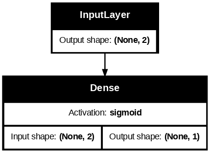
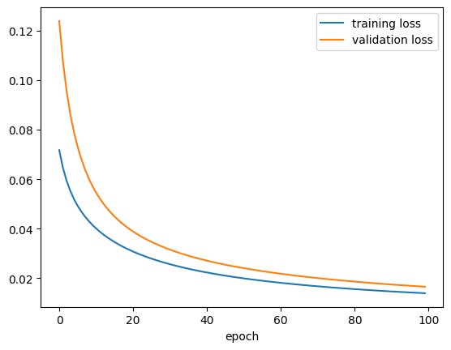
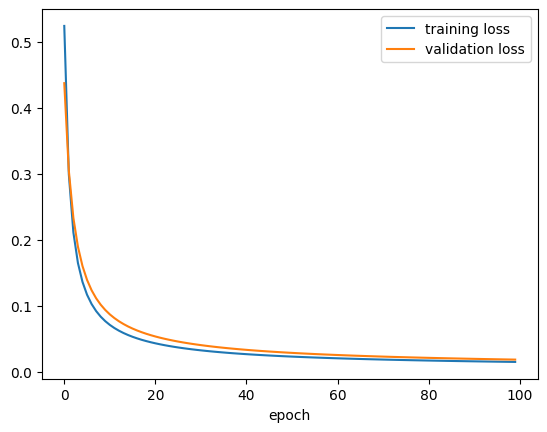
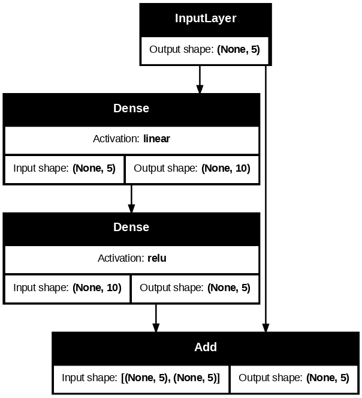
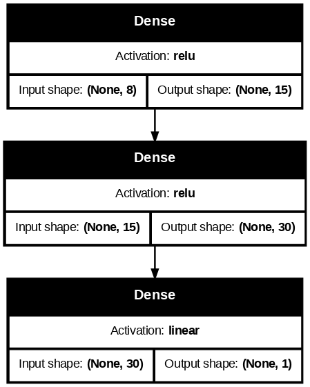
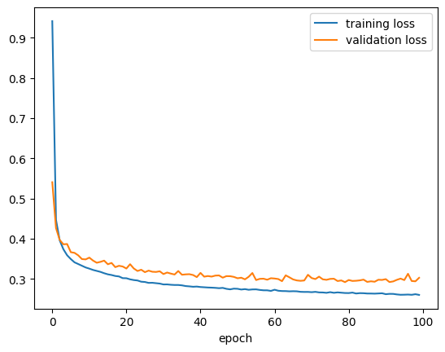
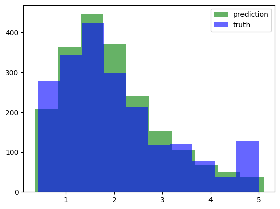
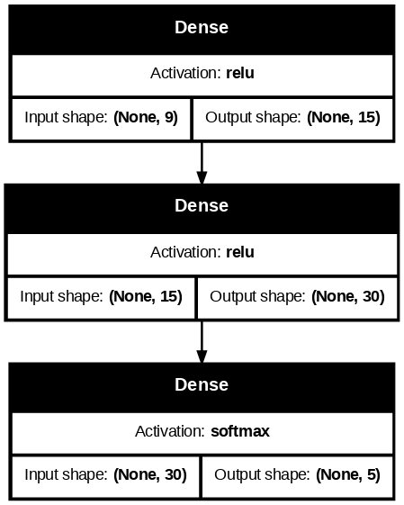
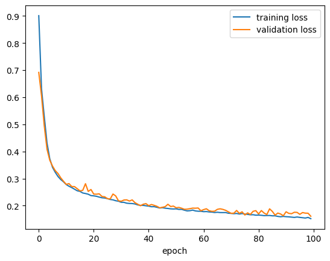
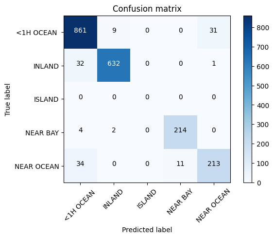

import numpy as np
import pandas as pd
import matplotlib.pyplot as plt
import tensorflow as tf
from tensorflow import kerasModul 6 Sains Data: Deep Learning dengan Keras, Regresi dan Klasifikasi
Functional API & Subclassing API dari Keras, Regresi & Klasifikasi dengan Neural Network”
Offline di Departemen Matematika
Kembali ke Sains Data
Perceptron, revisited: selain Sequential API
Di pertemuan sebelumnya, kita telah menyusun perceptron menggunakan Sequential API seperti berikut (ada dua cara yang ekuivalen):
# langsung menentukan semua layer di awal, dengan memasukkan list
model0 = keras.Sequential(
[
keras.layers.InputLayer(input_shape = (2,)),
keras.layers.Dense(units = 1, activation = keras.activations.sigmoid)
]
)/usr/local/lib/python3.12/dist-packages/keras/src/layers/core/input_layer.py:27: UserWarning: Argument `input_shape` is deprecated. Use `shape` instead.
warnings.warn(# menambahkan layer secara berangsur-angsur
model0 = keras.Sequential()
model0.add(keras.layers.InputLayer(input_shape = (2,)))
model0.add(keras.layers.Dense(units = 1, activation = keras.activations.sigmoid))Sequential API sebenarnya cukup terbatas: tiap layer harus berurutan satu sama lain, dan hubungan yang ada hanyalah antar pasangan dua layer yang bersebelahan.
Untuk model-model yang kita pelajari di mata kuliah Sains Data, sebenarnya Sequential API sudah cukup. Namun, kalau kalian pelajari lebih lanjut tentang neural network / deep learning, kalian akan bertemu dengan arsitektur aneh yang tidak bisa langsung disusun dengan Sequential API.
Contohnya, ada yang namanya skip connection, yaitu suatu layer terhubung dengan layer lain yang agak jauh darinya:

Sumber gambar: Aggarwal (2018) hal. 348
(Skip connection akan kalian temui kalau mempelajari residual network, yaitu arsitektur ResNet dan variasinya, yang sudah sangat di luar cakupan materi mata kuliah Sains Data.)
Untuk itu, diperlukan API selain Sequential, yaitu bisa dengan Functional API atau dengan Subclassing API. Agar kalian lebih mengenal Keras, kita akan mencoba membuat perceptron menggunakan dua API lainnya tersebut.
Kita bisa uji coba dengan dataset yang sama seperti di pertemuan sebelumnya: titik_negatif_positif.csv
df = pd.read_csv("./titik_negatif_positif.csv", dtype="float32")inputs_df = df.drop(columns=["kelas"])
targets_df = df[["kelas"]]inputs_arr = inputs_df.to_numpy()
targets_arr = targets_df.to_numpy()Functional API
Ide dari Functional API adalah menyusun tiap layer dan hubungan antar layer sebagai komposisi fungsi.
Untuk Functional API, daripada keras.layers.InputLayer, gunakan keras.layers.Input
m1_input = keras.layers.Input(shape = (2,))
m1_layer1_func = keras.layers.Dense(units = 1, activation = keras.activations.sigmoid)
m1_layer1_out = m1_layer1_func(m1_input) # seperti komposisi fungsi
model1 = keras.Model(inputs=m1_input, outputs=m1_layer1_out, name="model1")model1.summary()Model: "model1"
┏━━━━━━━━━━━━━━━━━━━━━━━━━━━━━━━━━┳━━━━━━━━━━━━━━━━━━━━━━━━┳━━━━━━━━━━━━━━━┓ ┃ Layer (type) ┃ Output Shape ┃ Param # ┃ ┡━━━━━━━━━━━━━━━━━━━━━━━━━━━━━━━━━╇━━━━━━━━━━━━━━━━━━━━━━━━╇━━━━━━━━━━━━━━━┩ │ input_layer_4 (InputLayer) │ (None, 2) │ 0 │ ├─────────────────────────────────┼────────────────────────┼───────────────┤ │ dense_6 (Dense) │ (None, 1) │ 3 │ └─────────────────────────────────┴────────────────────────┴───────────────┘
Total params: 3 (12.00 B)
Trainable params: 3 (12.00 B)
Non-trainable params: 0 (0.00 B)
keras.utils.plot_model(
model1,
show_shapes = True,
dpi=90,
show_layer_activations = True,
to_file = "keras_functional_model1.png"
)
Sisanya (compile lalu fit) sama dengan Sequential API
model1.compile(
optimizer = keras.optimizers.SGD(learning_rate = 0.01),
loss = keras.losses.BinaryCrossentropy(),
metrics = [keras.metrics.BinaryAccuracy()]
)history1 = model1.fit(inputs_arr, targets_arr, epochs=100, validation_split=0.2)Epoch 1/100
50/50 ━━━━━━━━━━━━━━━━━━━━ 1s 14ms/step - binary_accuracy: 0.9944 - loss: 0.0717 - val_binary_accuracy: 0.9875 - val_loss: 0.1239
Epoch 2/100
50/50 ━━━━━━━━━━━━━━━━━━━━ 0s 7ms/step - binary_accuracy: 0.9962 - loss: 0.0646 - val_binary_accuracy: 0.9900 - val_loss: 0.1077
Epoch 3/100
50/50 ━━━━━━━━━━━━━━━━━━━━ 0s 5ms/step - binary_accuracy: 0.9962 - loss: 0.0593 - val_binary_accuracy: 0.9950 - val_loss: 0.0956
Epoch 4/100
50/50 ━━━━━━━━━━━━━━━━━━━━ 0s 5ms/step - binary_accuracy: 0.9975 - loss: 0.0552 - val_binary_accuracy: 0.9975 - val_loss: 0.0863
Epoch 5/100
50/50 ━━━━━━━━━━━━━━━━━━━━ 0s 5ms/step - binary_accuracy: 0.9981 - loss: 0.0519 - val_binary_accuracy: 0.9975 - val_loss: 0.0789
Epoch 6/100
50/50 ━━━━━━━━━━━━━━━━━━━━ 0s 7ms/step - binary_accuracy: 0.9981 - loss: 0.0492 - val_binary_accuracy: 1.0000 - val_loss: 0.0730
Epoch 7/100
50/50 ━━━━━━━━━━━━━━━━━━━━ 0s 5ms/step - binary_accuracy: 0.9981 - loss: 0.0469 - val_binary_accuracy: 1.0000 - val_loss: 0.0680
Epoch 8/100
50/50 ━━━━━━━━━━━━━━━━━━━━ 0s 5ms/step - binary_accuracy: 0.9981 - loss: 0.0448 - val_binary_accuracy: 1.0000 - val_loss: 0.0639
Epoch 9/100
50/50 ━━━━━━━━━━━━━━━━━━━━ 0s 4ms/step - binary_accuracy: 0.9987 - loss: 0.0431 - val_binary_accuracy: 1.0000 - val_loss: 0.0603
Epoch 10/100
50/50 ━━━━━━━━━━━━━━━━━━━━ 0s 4ms/step - binary_accuracy: 0.9987 - loss: 0.0415 - val_binary_accuracy: 1.0000 - val_loss: 0.0572
Epoch 11/100
50/50 ━━━━━━━━━━━━━━━━━━━━ 0s 4ms/step - binary_accuracy: 0.9987 - loss: 0.0401 - val_binary_accuracy: 1.0000 - val_loss: 0.0545
Epoch 12/100
50/50 ━━━━━━━━━━━━━━━━━━━━ 0s 4ms/step - binary_accuracy: 0.9987 - loss: 0.0388 - val_binary_accuracy: 1.0000 - val_loss: 0.0521
Epoch 13/100
50/50 ━━━━━━━━━━━━━━━━━━━━ 0s 4ms/step - binary_accuracy: 0.9987 - loss: 0.0376 - val_binary_accuracy: 1.0000 - val_loss: 0.0500
Epoch 14/100
50/50 ━━━━━━━━━━━━━━━━━━━━ 0s 4ms/step - binary_accuracy: 0.9987 - loss: 0.0365 - val_binary_accuracy: 1.0000 - val_loss: 0.0481
Epoch 15/100
50/50 ━━━━━━━━━━━━━━━━━━━━ 0s 4ms/step - binary_accuracy: 0.9987 - loss: 0.0355 - val_binary_accuracy: 1.0000 - val_loss: 0.0464
Epoch 16/100
50/50 ━━━━━━━━━━━━━━━━━━━━ 0s 4ms/step - binary_accuracy: 0.9987 - loss: 0.0346 - val_binary_accuracy: 1.0000 - val_loss: 0.0449
Epoch 17/100
50/50 ━━━━━━━━━━━━━━━━━━━━ 0s 4ms/step - binary_accuracy: 0.9987 - loss: 0.0337 - val_binary_accuracy: 1.0000 - val_loss: 0.0435
Epoch 18/100
50/50 ━━━━━━━━━━━━━━━━━━━━ 0s 4ms/step - binary_accuracy: 0.9987 - loss: 0.0329 - val_binary_accuracy: 1.0000 - val_loss: 0.0422
Epoch 19/100
50/50 ━━━━━━━━━━━━━━━━━━━━ 0s 4ms/step - binary_accuracy: 0.9987 - loss: 0.0321 - val_binary_accuracy: 1.0000 - val_loss: 0.0410
Epoch 20/100
50/50 ━━━━━━━━━━━━━━━━━━━━ 0s 4ms/step - binary_accuracy: 0.9987 - loss: 0.0314 - val_binary_accuracy: 1.0000 - val_loss: 0.0399
Epoch 21/100
50/50 ━━━━━━━━━━━━━━━━━━━━ 0s 4ms/step - binary_accuracy: 0.9987 - loss: 0.0307 - val_binary_accuracy: 1.0000 - val_loss: 0.0388
Epoch 22/100
50/50 ━━━━━━━━━━━━━━━━━━━━ 0s 4ms/step - binary_accuracy: 0.9987 - loss: 0.0301 - val_binary_accuracy: 1.0000 - val_loss: 0.0379
Epoch 23/100
50/50 ━━━━━━━━━━━━━━━━━━━━ 0s 4ms/step - binary_accuracy: 0.9987 - loss: 0.0295 - val_binary_accuracy: 1.0000 - val_loss: 0.0370
Epoch 24/100
50/50 ━━━━━━━━━━━━━━━━━━━━ 0s 4ms/step - binary_accuracy: 0.9987 - loss: 0.0289 - val_binary_accuracy: 1.0000 - val_loss: 0.0362
Epoch 25/100
50/50 ━━━━━━━━━━━━━━━━━━━━ 0s 4ms/step - binary_accuracy: 0.9987 - loss: 0.0284 - val_binary_accuracy: 1.0000 - val_loss: 0.0354
Epoch 26/100
50/50 ━━━━━━━━━━━━━━━━━━━━ 0s 4ms/step - binary_accuracy: 0.9987 - loss: 0.0279 - val_binary_accuracy: 1.0000 - val_loss: 0.0346
Epoch 27/100
50/50 ━━━━━━━━━━━━━━━━━━━━ 0s 4ms/step - binary_accuracy: 0.9987 - loss: 0.0274 - val_binary_accuracy: 1.0000 - val_loss: 0.0339
Epoch 28/100
50/50 ━━━━━━━━━━━━━━━━━━━━ 0s 4ms/step - binary_accuracy: 0.9987 - loss: 0.0269 - val_binary_accuracy: 1.0000 - val_loss: 0.0333
Epoch 29/100
50/50 ━━━━━━━━━━━━━━━━━━━━ 0s 4ms/step - binary_accuracy: 0.9987 - loss: 0.0265 - val_binary_accuracy: 1.0000 - val_loss: 0.0327
Epoch 30/100
50/50 ━━━━━━━━━━━━━━━━━━━━ 0s 4ms/step - binary_accuracy: 0.9987 - loss: 0.0260 - val_binary_accuracy: 1.0000 - val_loss: 0.0321
Epoch 31/100
50/50 ━━━━━━━━━━━━━━━━━━━━ 0s 4ms/step - binary_accuracy: 0.9987 - loss: 0.0256 - val_binary_accuracy: 1.0000 - val_loss: 0.0315
Epoch 32/100
50/50 ━━━━━━━━━━━━━━━━━━━━ 0s 4ms/step - binary_accuracy: 0.9987 - loss: 0.0252 - val_binary_accuracy: 1.0000 - val_loss: 0.0310
Epoch 33/100
50/50 ━━━━━━━━━━━━━━━━━━━━ 0s 4ms/step - binary_accuracy: 0.9987 - loss: 0.0248 - val_binary_accuracy: 1.0000 - val_loss: 0.0305
Epoch 34/100
50/50 ━━━━━━━━━━━━━━━━━━━━ 0s 4ms/step - binary_accuracy: 0.9987 - loss: 0.0245 - val_binary_accuracy: 1.0000 - val_loss: 0.0300
Epoch 35/100
50/50 ━━━━━━━━━━━━━━━━━━━━ 0s 4ms/step - binary_accuracy: 0.9994 - loss: 0.0241 - val_binary_accuracy: 1.0000 - val_loss: 0.0295
Epoch 36/100
50/50 ━━━━━━━━━━━━━━━━━━━━ 0s 4ms/step - binary_accuracy: 0.9994 - loss: 0.0238 - val_binary_accuracy: 1.0000 - val_loss: 0.0290
Epoch 37/100
50/50 ━━━━━━━━━━━━━━━━━━━━ 0s 4ms/step - binary_accuracy: 0.9994 - loss: 0.0235 - val_binary_accuracy: 1.0000 - val_loss: 0.0286
Epoch 38/100
50/50 ━━━━━━━━━━━━━━━━━━━━ 0s 4ms/step - binary_accuracy: 0.9994 - loss: 0.0232 - val_binary_accuracy: 1.0000 - val_loss: 0.0282
Epoch 39/100
50/50 ━━━━━━━━━━━━━━━━━━━━ 0s 4ms/step - binary_accuracy: 0.9994 - loss: 0.0229 - val_binary_accuracy: 1.0000 - val_loss: 0.0278
Epoch 40/100
50/50 ━━━━━━━━━━━━━━━━━━━━ 0s 4ms/step - binary_accuracy: 0.9994 - loss: 0.0226 - val_binary_accuracy: 1.0000 - val_loss: 0.0274
Epoch 41/100
50/50 ━━━━━━━━━━━━━━━━━━━━ 0s 4ms/step - binary_accuracy: 0.9994 - loss: 0.0223 - val_binary_accuracy: 1.0000 - val_loss: 0.0271
Epoch 42/100
50/50 ━━━━━━━━━━━━━━━━━━━━ 0s 4ms/step - binary_accuracy: 0.9994 - loss: 0.0220 - val_binary_accuracy: 1.0000 - val_loss: 0.0267
Epoch 43/100
50/50 ━━━━━━━━━━━━━━━━━━━━ 0s 4ms/step - binary_accuracy: 0.9994 - loss: 0.0217 - val_binary_accuracy: 1.0000 - val_loss: 0.0264
Epoch 44/100
50/50 ━━━━━━━━━━━━━━━━━━━━ 0s 4ms/step - binary_accuracy: 0.9994 - loss: 0.0215 - val_binary_accuracy: 1.0000 - val_loss: 0.0260
Epoch 45/100
50/50 ━━━━━━━━━━━━━━━━━━━━ 0s 4ms/step - binary_accuracy: 0.9994 - loss: 0.0212 - val_binary_accuracy: 1.0000 - val_loss: 0.0257
Epoch 46/100
50/50 ━━━━━━━━━━━━━━━━━━━━ 0s 4ms/step - binary_accuracy: 0.9994 - loss: 0.0210 - val_binary_accuracy: 1.0000 - val_loss: 0.0254
Epoch 47/100
50/50 ━━━━━━━━━━━━━━━━━━━━ 0s 4ms/step - binary_accuracy: 0.9994 - loss: 0.0208 - val_binary_accuracy: 1.0000 - val_loss: 0.0251
Epoch 48/100
50/50 ━━━━━━━━━━━━━━━━━━━━ 0s 4ms/step - binary_accuracy: 0.9994 - loss: 0.0205 - val_binary_accuracy: 1.0000 - val_loss: 0.0248
Epoch 49/100
50/50 ━━━━━━━━━━━━━━━━━━━━ 0s 4ms/step - binary_accuracy: 0.9994 - loss: 0.0203 - val_binary_accuracy: 1.0000 - val_loss: 0.0246
Epoch 50/100
50/50 ━━━━━━━━━━━━━━━━━━━━ 0s 4ms/step - binary_accuracy: 0.9994 - loss: 0.0201 - val_binary_accuracy: 1.0000 - val_loss: 0.0243
Epoch 51/100
50/50 ━━━━━━━━━━━━━━━━━━━━ 0s 4ms/step - binary_accuracy: 0.9994 - loss: 0.0199 - val_binary_accuracy: 1.0000 - val_loss: 0.0240
Epoch 52/100
50/50 ━━━━━━━━━━━━━━━━━━━━ 0s 4ms/step - binary_accuracy: 0.9994 - loss: 0.0197 - val_binary_accuracy: 1.0000 - val_loss: 0.0238
Epoch 53/100
50/50 ━━━━━━━━━━━━━━━━━━━━ 0s 4ms/step - binary_accuracy: 0.9994 - loss: 0.0195 - val_binary_accuracy: 1.0000 - val_loss: 0.0235
Epoch 54/100
50/50 ━━━━━━━━━━━━━━━━━━━━ 0s 4ms/step - binary_accuracy: 0.9994 - loss: 0.0193 - val_binary_accuracy: 1.0000 - val_loss: 0.0233
Epoch 55/100
50/50 ━━━━━━━━━━━━━━━━━━━━ 0s 6ms/step - binary_accuracy: 0.9994 - loss: 0.0191 - val_binary_accuracy: 1.0000 - val_loss: 0.0230
Epoch 56/100
50/50 ━━━━━━━━━━━━━━━━━━━━ 0s 5ms/step - binary_accuracy: 0.9994 - loss: 0.0189 - val_binary_accuracy: 1.0000 - val_loss: 0.0228
Epoch 57/100
50/50 ━━━━━━━━━━━━━━━━━━━━ 0s 7ms/step - binary_accuracy: 0.9994 - loss: 0.0188 - val_binary_accuracy: 1.0000 - val_loss: 0.0226
Epoch 58/100
50/50 ━━━━━━━━━━━━━━━━━━━━ 0s 7ms/step - binary_accuracy: 0.9994 - loss: 0.0186 - val_binary_accuracy: 1.0000 - val_loss: 0.0224
Epoch 59/100
50/50 ━━━━━━━━━━━━━━━━━━━━ 0s 5ms/step - binary_accuracy: 0.9994 - loss: 0.0184 - val_binary_accuracy: 1.0000 - val_loss: 0.0222
Epoch 60/100
50/50 ━━━━━━━━━━━━━━━━━━━━ 0s 5ms/step - binary_accuracy: 0.9994 - loss: 0.0183 - val_binary_accuracy: 1.0000 - val_loss: 0.0220
Epoch 61/100
50/50 ━━━━━━━━━━━━━━━━━━━━ 0s 6ms/step - binary_accuracy: 0.9994 - loss: 0.0181 - val_binary_accuracy: 1.0000 - val_loss: 0.0218
Epoch 62/100
50/50 ━━━━━━━━━━━━━━━━━━━━ 0s 5ms/step - binary_accuracy: 0.9994 - loss: 0.0180 - val_binary_accuracy: 1.0000 - val_loss: 0.0216
Epoch 63/100
50/50 ━━━━━━━━━━━━━━━━━━━━ 0s 4ms/step - binary_accuracy: 0.9994 - loss: 0.0178 - val_binary_accuracy: 1.0000 - val_loss: 0.0214
Epoch 64/100
50/50 ━━━━━━━━━━━━━━━━━━━━ 0s 4ms/step - binary_accuracy: 0.9994 - loss: 0.0177 - val_binary_accuracy: 1.0000 - val_loss: 0.0212
Epoch 65/100
50/50 ━━━━━━━━━━━━━━━━━━━━ 0s 4ms/step - binary_accuracy: 0.9994 - loss: 0.0175 - val_binary_accuracy: 1.0000 - val_loss: 0.0210
Epoch 66/100
50/50 ━━━━━━━━━━━━━━━━━━━━ 0s 4ms/step - binary_accuracy: 0.9994 - loss: 0.0174 - val_binary_accuracy: 1.0000 - val_loss: 0.0208
Epoch 67/100
50/50 ━━━━━━━━━━━━━━━━━━━━ 0s 4ms/step - binary_accuracy: 0.9994 - loss: 0.0172 - val_binary_accuracy: 1.0000 - val_loss: 0.0207
Epoch 68/100
50/50 ━━━━━━━━━━━━━━━━━━━━ 0s 4ms/step - binary_accuracy: 0.9994 - loss: 0.0171 - val_binary_accuracy: 1.0000 - val_loss: 0.0205
Epoch 69/100
50/50 ━━━━━━━━━━━━━━━━━━━━ 0s 4ms/step - binary_accuracy: 0.9994 - loss: 0.0170 - val_binary_accuracy: 1.0000 - val_loss: 0.0203
Epoch 70/100
50/50 ━━━━━━━━━━━━━━━━━━━━ 0s 4ms/step - binary_accuracy: 0.9994 - loss: 0.0168 - val_binary_accuracy: 1.0000 - val_loss: 0.0202
Epoch 71/100
50/50 ━━━━━━━━━━━━━━━━━━━━ 0s 4ms/step - binary_accuracy: 0.9994 - loss: 0.0167 - val_binary_accuracy: 1.0000 - val_loss: 0.0200
Epoch 72/100
50/50 ━━━━━━━━━━━━━━━━━━━━ 0s 4ms/step - binary_accuracy: 0.9994 - loss: 0.0166 - val_binary_accuracy: 1.0000 - val_loss: 0.0199
Epoch 73/100
50/50 ━━━━━━━━━━━━━━━━━━━━ 0s 4ms/step - binary_accuracy: 0.9994 - loss: 0.0165 - val_binary_accuracy: 1.0000 - val_loss: 0.0197
Epoch 74/100
50/50 ━━━━━━━━━━━━━━━━━━━━ 0s 4ms/step - binary_accuracy: 0.9994 - loss: 0.0163 - val_binary_accuracy: 1.0000 - val_loss: 0.0196
Epoch 75/100
50/50 ━━━━━━━━━━━━━━━━━━━━ 0s 4ms/step - binary_accuracy: 0.9994 - loss: 0.0162 - val_binary_accuracy: 1.0000 - val_loss: 0.0194
Epoch 76/100
50/50 ━━━━━━━━━━━━━━━━━━━━ 0s 4ms/step - binary_accuracy: 0.9994 - loss: 0.0161 - val_binary_accuracy: 1.0000 - val_loss: 0.0193
Epoch 77/100
50/50 ━━━━━━━━━━━━━━━━━━━━ 0s 4ms/step - binary_accuracy: 0.9994 - loss: 0.0160 - val_binary_accuracy: 1.0000 - val_loss: 0.0191
Epoch 78/100
50/50 ━━━━━━━━━━━━━━━━━━━━ 0s 4ms/step - binary_accuracy: 0.9994 - loss: 0.0159 - val_binary_accuracy: 1.0000 - val_loss: 0.0190
Epoch 79/100
50/50 ━━━━━━━━━━━━━━━━━━━━ 0s 4ms/step - binary_accuracy: 0.9994 - loss: 0.0158 - val_binary_accuracy: 1.0000 - val_loss: 0.0189
Epoch 80/100
50/50 ━━━━━━━━━━━━━━━━━━━━ 0s 4ms/step - binary_accuracy: 0.9994 - loss: 0.0157 - val_binary_accuracy: 1.0000 - val_loss: 0.0187
Epoch 81/100
50/50 ━━━━━━━━━━━━━━━━━━━━ 0s 4ms/step - binary_accuracy: 0.9994 - loss: 0.0156 - val_binary_accuracy: 1.0000 - val_loss: 0.0186
Epoch 82/100
50/50 ━━━━━━━━━━━━━━━━━━━━ 0s 4ms/step - binary_accuracy: 0.9994 - loss: 0.0155 - val_binary_accuracy: 1.0000 - val_loss: 0.0185
Epoch 83/100
50/50 ━━━━━━━━━━━━━━━━━━━━ 0s 4ms/step - binary_accuracy: 0.9994 - loss: 0.0154 - val_binary_accuracy: 1.0000 - val_loss: 0.0183
Epoch 84/100
50/50 ━━━━━━━━━━━━━━━━━━━━ 0s 4ms/step - binary_accuracy: 0.9994 - loss: 0.0153 - val_binary_accuracy: 1.0000 - val_loss: 0.0182
Epoch 85/100
50/50 ━━━━━━━━━━━━━━━━━━━━ 0s 4ms/step - binary_accuracy: 0.9994 - loss: 0.0152 - val_binary_accuracy: 1.0000 - val_loss: 0.0181
Epoch 86/100
50/50 ━━━━━━━━━━━━━━━━━━━━ 0s 4ms/step - binary_accuracy: 0.9994 - loss: 0.0151 - val_binary_accuracy: 1.0000 - val_loss: 0.0180
Epoch 87/100
50/50 ━━━━━━━━━━━━━━━━━━━━ 0s 4ms/step - binary_accuracy: 0.9994 - loss: 0.0150 - val_binary_accuracy: 1.0000 - val_loss: 0.0179
Epoch 88/100
50/50 ━━━━━━━━━━━━━━━━━━━━ 0s 4ms/step - binary_accuracy: 0.9994 - loss: 0.0149 - val_binary_accuracy: 1.0000 - val_loss: 0.0178
Epoch 89/100
50/50 ━━━━━━━━━━━━━━━━━━━━ 0s 4ms/step - binary_accuracy: 0.9994 - loss: 0.0148 - val_binary_accuracy: 1.0000 - val_loss: 0.0176
Epoch 90/100
50/50 ━━━━━━━━━━━━━━━━━━━━ 0s 4ms/step - binary_accuracy: 0.9994 - loss: 0.0147 - val_binary_accuracy: 1.0000 - val_loss: 0.0175
Epoch 91/100
50/50 ━━━━━━━━━━━━━━━━━━━━ 0s 4ms/step - binary_accuracy: 0.9994 - loss: 0.0146 - val_binary_accuracy: 1.0000 - val_loss: 0.0174
Epoch 92/100
50/50 ━━━━━━━━━━━━━━━━━━━━ 0s 4ms/step - binary_accuracy: 0.9994 - loss: 0.0145 - val_binary_accuracy: 1.0000 - val_loss: 0.0173
Epoch 93/100
50/50 ━━━━━━━━━━━━━━━━━━━━ 0s 5ms/step - binary_accuracy: 0.9994 - loss: 0.0145 - val_binary_accuracy: 1.0000 - val_loss: 0.0172
Epoch 94/100
50/50 ━━━━━━━━━━━━━━━━━━━━ 0s 4ms/step - binary_accuracy: 0.9994 - loss: 0.0144 - val_binary_accuracy: 1.0000 - val_loss: 0.0171
Epoch 95/100
50/50 ━━━━━━━━━━━━━━━━━━━━ 0s 4ms/step - binary_accuracy: 0.9994 - loss: 0.0143 - val_binary_accuracy: 1.0000 - val_loss: 0.0170
Epoch 96/100
50/50 ━━━━━━━━━━━━━━━━━━━━ 0s 4ms/step - binary_accuracy: 0.9994 - loss: 0.0142 - val_binary_accuracy: 1.0000 - val_loss: 0.0169
Epoch 97/100
50/50 ━━━━━━━━━━━━━━━━━━━━ 0s 4ms/step - binary_accuracy: 0.9994 - loss: 0.0141 - val_binary_accuracy: 1.0000 - val_loss: 0.0168
Epoch 98/100
50/50 ━━━━━━━━━━━━━━━━━━━━ 0s 4ms/step - binary_accuracy: 0.9994 - loss: 0.0141 - val_binary_accuracy: 1.0000 - val_loss: 0.0167
Epoch 99/100
50/50 ━━━━━━━━━━━━━━━━━━━━ 0s 4ms/step - binary_accuracy: 0.9994 - loss: 0.0140 - val_binary_accuracy: 1.0000 - val_loss: 0.0166
Epoch 100/100
50/50 ━━━━━━━━━━━━━━━━━━━━ 0s 4ms/step - binary_accuracy: 0.9994 - loss: 0.0139 - val_binary_accuracy: 1.0000 - val_loss: 0.0165Kita bisa ubah dictionary .history menjadi CSV:
pd.DataFrame(history1.history).to_csv("./keras_functional_history1.csv", index=False)Silakan download kalau mau menyocokkan/membandingkan dengan modul: keras_functional_history1.csv
Import kembali:
history1_df = pd.read_csv("./keras_functional_history1.csv")Lalu plot loss:
plt.plot(history1_df["loss"], label = "training loss")
plt.plot(history1_df["val_loss"], label = "validation loss")
plt.xlabel("epoch")
plt.legend()
plt.show()
Subclassing API (yaitu dengan OOP)
Untuk model yang lebih kompleks, mungkin komposisi fungsi akan membuat pusing, karena banyak fungsi bertebaran di mana-mana. Agar lebih rapi dan terstruktur, kita bisa gunakan Subclassing API, yaitu dengan OOP / object oriented programming.
Silakan review Modul 2 Praktikum Struktur Data tentang Pengantar OOP kalau perlu ;)
Dalam Subclassing API, model yang kita buat berupa class yang meng-inherit (atau disebut subclassing) dari keras.Model yang sudah mengimplementasikan sebagian besar method yang kita butuhkan.
(Bahkan, kita juga bisa buat class yang hanya berupa kumpulan layer, yang nantinya akan masuk lagi ke class lain. Kalian bisa pelajari lebih lanjut: https://keras.io/guides/making_new_layers_and_models_via_subclassing/)
Dalam model yang kita susun, hanya diperlukan:
constructor
__init__berisi minimal satu baris, yaitusuper().__init__()dan boleh berisi baris lainnya untuk menyiapkan atribut (variabel) yang langsung bisa dibuat ketika model dibuat (sebelum mulai training)method
callyang mendefinisikan bagaimana forward pass(opsional) method
buildyang menyiapkan atribut yang bisa dibuat di awal training setelah ukuran input diketahui
class MyPerceptron(keras.Model):
def __init__(self, units=1):
super().__init__()
# banyaknya neuron di output layer
self.units = units
# menyiapkan parameter (weights and biases) tergantung ukuran input
def build(self, input_shape):
input_dim = input_shape[-1]
# matriks W terkadang disebut kernel
self.kernel = self.add_weight(
shape = (input_dim, self.units),
initializer = keras.initializers.RandomNormal(mean=0, stddev=0.05),
trainable = True,
)
self.bias = self.add_weight(
shape = (self.units,),
initializer = keras.initializers.RandomNormal(),
trainable = True
)
# forward pass
def call(self, inputs):
return tf.sigmoid(
tf.matmul(inputs, self.kernel) + self.bias
)Kita harus membuat instance atau objek dari class ini terlebih dahulu, lalu memanggil .build() dulu, agar kemudian bisa melakukan misalnya .fit()
model2 = MyPerceptron()model2.build(input_shape = (2,))Sekarang kita bisa compile, fit, simpan history, dan plot loss seperti biasa…
model2.compile(
optimizer = keras.optimizers.SGD(learning_rate = 0.01),
loss = keras.losses.BinaryCrossentropy(),
metrics = [keras.metrics.BinaryAccuracy()]
)history2 = model2.fit(inputs_arr, targets_arr, epochs=100, validation_split=0.2)Epoch 1/100
50/50 ━━━━━━━━━━━━━━━━━━━━ 1s 14ms/step - binary_accuracy: 0.9031 - loss: 0.5242 - val_binary_accuracy: 0.9850 - val_loss: 0.4374
Epoch 2/100
50/50 ━━━━━━━━━━━━━━━━━━━━ 0s 6ms/step - binary_accuracy: 0.9969 - loss: 0.2992 - val_binary_accuracy: 0.9975 - val_loss: 0.3047
Epoch 3/100
50/50 ━━━━━━━━━━━━━━━━━━━━ 0s 5ms/step - binary_accuracy: 0.9981 - loss: 0.2112 - val_binary_accuracy: 0.9975 - val_loss: 0.2332
Epoch 4/100
50/50 ━━━━━━━━━━━━━━━━━━━━ 0s 5ms/step - binary_accuracy: 0.9987 - loss: 0.1648 - val_binary_accuracy: 0.9975 - val_loss: 0.1895
Epoch 5/100
50/50 ━━━━━━━━━━━━━━━━━━━━ 0s 7ms/step - binary_accuracy: 0.9987 - loss: 0.1362 - val_binary_accuracy: 1.0000 - val_loss: 0.1602
Epoch 6/100
50/50 ━━━━━━━━━━━━━━━━━━━━ 0s 5ms/step - binary_accuracy: 0.9987 - loss: 0.1167 - val_binary_accuracy: 1.0000 - val_loss: 0.1392
Epoch 7/100
50/50 ━━━━━━━━━━━━━━━━━━━━ 0s 5ms/step - binary_accuracy: 0.9987 - loss: 0.1026 - val_binary_accuracy: 1.0000 - val_loss: 0.1235
Epoch 8/100
50/50 ━━━━━━━━━━━━━━━━━━━━ 0s 7ms/step - binary_accuracy: 0.9987 - loss: 0.0919 - val_binary_accuracy: 1.0000 - val_loss: 0.1113
Epoch 9/100
50/50 ━━━━━━━━━━━━━━━━━━━━ 0s 6ms/step - binary_accuracy: 0.9987 - loss: 0.0835 - val_binary_accuracy: 1.0000 - val_loss: 0.1016
Epoch 10/100
50/50 ━━━━━━━━━━━━━━━━━━━━ 0s 4ms/step - binary_accuracy: 0.9987 - loss: 0.0767 - val_binary_accuracy: 1.0000 - val_loss: 0.0936
Epoch 11/100
50/50 ━━━━━━━━━━━━━━━━━━━━ 0s 4ms/step - binary_accuracy: 0.9987 - loss: 0.0710 - val_binary_accuracy: 1.0000 - val_loss: 0.0870
Epoch 12/100
50/50 ━━━━━━━━━━━━━━━━━━━━ 0s 4ms/step - binary_accuracy: 0.9987 - loss: 0.0663 - val_binary_accuracy: 1.0000 - val_loss: 0.0814
Epoch 13/100
50/50 ━━━━━━━━━━━━━━━━━━━━ 0s 4ms/step - binary_accuracy: 0.9987 - loss: 0.0622 - val_binary_accuracy: 1.0000 - val_loss: 0.0765
Epoch 14/100
50/50 ━━━━━━━━━━━━━━━━━━━━ 0s 4ms/step - binary_accuracy: 0.9987 - loss: 0.0587 - val_binary_accuracy: 1.0000 - val_loss: 0.0723
Epoch 15/100
50/50 ━━━━━━━━━━━━━━━━━━━━ 0s 4ms/step - binary_accuracy: 0.9987 - loss: 0.0557 - val_binary_accuracy: 1.0000 - val_loss: 0.0687
Epoch 16/100
50/50 ━━━━━━━━━━━━━━━━━━━━ 0s 4ms/step - binary_accuracy: 0.9987 - loss: 0.0530 - val_binary_accuracy: 1.0000 - val_loss: 0.0654
Epoch 17/100
50/50 ━━━━━━━━━━━━━━━━━━━━ 0s 4ms/step - binary_accuracy: 0.9987 - loss: 0.0506 - val_binary_accuracy: 1.0000 - val_loss: 0.0625
Epoch 18/100
50/50 ━━━━━━━━━━━━━━━━━━━━ 0s 4ms/step - binary_accuracy: 0.9987 - loss: 0.0484 - val_binary_accuracy: 1.0000 - val_loss: 0.0599
Epoch 19/100
50/50 ━━━━━━━━━━━━━━━━━━━━ 0s 4ms/step - binary_accuracy: 0.9987 - loss: 0.0465 - val_binary_accuracy: 1.0000 - val_loss: 0.0575
Epoch 20/100
50/50 ━━━━━━━━━━━━━━━━━━━━ 0s 4ms/step - binary_accuracy: 0.9987 - loss: 0.0447 - val_binary_accuracy: 1.0000 - val_loss: 0.0554
Epoch 21/100
50/50 ━━━━━━━━━━━━━━━━━━━━ 0s 4ms/step - binary_accuracy: 0.9987 - loss: 0.0431 - val_binary_accuracy: 1.0000 - val_loss: 0.0534
Epoch 22/100
50/50 ━━━━━━━━━━━━━━━━━━━━ 0s 4ms/step - binary_accuracy: 0.9987 - loss: 0.0416 - val_binary_accuracy: 1.0000 - val_loss: 0.0516
Epoch 23/100
50/50 ━━━━━━━━━━━━━━━━━━━━ 0s 4ms/step - binary_accuracy: 0.9987 - loss: 0.0403 - val_binary_accuracy: 1.0000 - val_loss: 0.0500
Epoch 24/100
50/50 ━━━━━━━━━━━━━━━━━━━━ 0s 4ms/step - binary_accuracy: 0.9987 - loss: 0.0390 - val_binary_accuracy: 1.0000 - val_loss: 0.0485
Epoch 25/100
50/50 ━━━━━━━━━━━━━━━━━━━━ 0s 4ms/step - binary_accuracy: 0.9987 - loss: 0.0379 - val_binary_accuracy: 1.0000 - val_loss: 0.0471
Epoch 26/100
50/50 ━━━━━━━━━━━━━━━━━━━━ 0s 4ms/step - binary_accuracy: 0.9987 - loss: 0.0368 - val_binary_accuracy: 1.0000 - val_loss: 0.0457
Epoch 27/100
50/50 ━━━━━━━━━━━━━━━━━━━━ 0s 4ms/step - binary_accuracy: 0.9987 - loss: 0.0358 - val_binary_accuracy: 1.0000 - val_loss: 0.0445
Epoch 28/100
50/50 ━━━━━━━━━━━━━━━━━━━━ 0s 4ms/step - binary_accuracy: 0.9987 - loss: 0.0349 - val_binary_accuracy: 1.0000 - val_loss: 0.0434
Epoch 29/100
50/50 ━━━━━━━━━━━━━━━━━━━━ 0s 4ms/step - binary_accuracy: 0.9987 - loss: 0.0340 - val_binary_accuracy: 1.0000 - val_loss: 0.0423
Epoch 30/100
50/50 ━━━━━━━━━━━━━━━━━━━━ 0s 4ms/step - binary_accuracy: 0.9994 - loss: 0.0332 - val_binary_accuracy: 1.0000 - val_loss: 0.0413
Epoch 31/100
50/50 ━━━━━━━━━━━━━━━━━━━━ 0s 4ms/step - binary_accuracy: 0.9994 - loss: 0.0324 - val_binary_accuracy: 1.0000 - val_loss: 0.0403
Epoch 32/100
50/50 ━━━━━━━━━━━━━━━━━━━━ 0s 4ms/step - binary_accuracy: 0.9994 - loss: 0.0317 - val_binary_accuracy: 1.0000 - val_loss: 0.0394
Epoch 33/100
50/50 ━━━━━━━━━━━━━━━━━━━━ 0s 4ms/step - binary_accuracy: 0.9994 - loss: 0.0310 - val_binary_accuracy: 1.0000 - val_loss: 0.0386
Epoch 34/100
50/50 ━━━━━━━━━━━━━━━━━━━━ 0s 4ms/step - binary_accuracy: 0.9994 - loss: 0.0304 - val_binary_accuracy: 1.0000 - val_loss: 0.0378
Epoch 35/100
50/50 ━━━━━━━━━━━━━━━━━━━━ 0s 4ms/step - binary_accuracy: 0.9994 - loss: 0.0297 - val_binary_accuracy: 1.0000 - val_loss: 0.0370
Epoch 36/100
50/50 ━━━━━━━━━━━━━━━━━━━━ 0s 4ms/step - binary_accuracy: 0.9994 - loss: 0.0292 - val_binary_accuracy: 1.0000 - val_loss: 0.0363
Epoch 37/100
50/50 ━━━━━━━━━━━━━━━━━━━━ 0s 4ms/step - binary_accuracy: 0.9994 - loss: 0.0286 - val_binary_accuracy: 1.0000 - val_loss: 0.0356
Epoch 38/100
50/50 ━━━━━━━━━━━━━━━━━━━━ 0s 4ms/step - binary_accuracy: 0.9994 - loss: 0.0281 - val_binary_accuracy: 1.0000 - val_loss: 0.0350
Epoch 39/100
50/50 ━━━━━━━━━━━━━━━━━━━━ 0s 4ms/step - binary_accuracy: 0.9994 - loss: 0.0276 - val_binary_accuracy: 1.0000 - val_loss: 0.0343
Epoch 40/100
50/50 ━━━━━━━━━━━━━━━━━━━━ 0s 4ms/step - binary_accuracy: 0.9994 - loss: 0.0271 - val_binary_accuracy: 1.0000 - val_loss: 0.0337
Epoch 41/100
50/50 ━━━━━━━━━━━━━━━━━━━━ 0s 4ms/step - binary_accuracy: 0.9994 - loss: 0.0266 - val_binary_accuracy: 1.0000 - val_loss: 0.0332
Epoch 42/100
50/50 ━━━━━━━━━━━━━━━━━━━━ 0s 4ms/step - binary_accuracy: 0.9994 - loss: 0.0262 - val_binary_accuracy: 1.0000 - val_loss: 0.0326
Epoch 43/100
50/50 ━━━━━━━━━━━━━━━━━━━━ 0s 4ms/step - binary_accuracy: 0.9994 - loss: 0.0258 - val_binary_accuracy: 1.0000 - val_loss: 0.0321
Epoch 44/100
50/50 ━━━━━━━━━━━━━━━━━━━━ 0s 4ms/step - binary_accuracy: 0.9994 - loss: 0.0254 - val_binary_accuracy: 1.0000 - val_loss: 0.0316
Epoch 45/100
50/50 ━━━━━━━━━━━━━━━━━━━━ 0s 4ms/step - binary_accuracy: 0.9994 - loss: 0.0250 - val_binary_accuracy: 1.0000 - val_loss: 0.0311
Epoch 46/100
50/50 ━━━━━━━━━━━━━━━━━━━━ 0s 4ms/step - binary_accuracy: 0.9994 - loss: 0.0246 - val_binary_accuracy: 1.0000 - val_loss: 0.0306
Epoch 47/100
50/50 ━━━━━━━━━━━━━━━━━━━━ 0s 4ms/step - binary_accuracy: 0.9994 - loss: 0.0243 - val_binary_accuracy: 1.0000 - val_loss: 0.0302
Epoch 48/100
50/50 ━━━━━━━━━━━━━━━━━━━━ 0s 4ms/step - binary_accuracy: 0.9994 - loss: 0.0239 - val_binary_accuracy: 1.0000 - val_loss: 0.0298
Epoch 49/100
50/50 ━━━━━━━━━━━━━━━━━━━━ 0s 4ms/step - binary_accuracy: 0.9994 - loss: 0.0236 - val_binary_accuracy: 1.0000 - val_loss: 0.0294
Epoch 50/100
50/50 ━━━━━━━━━━━━━━━━━━━━ 0s 3ms/step - binary_accuracy: 0.9994 - loss: 0.0233 - val_binary_accuracy: 1.0000 - val_loss: 0.0290
Epoch 51/100
50/50 ━━━━━━━━━━━━━━━━━━━━ 0s 4ms/step - binary_accuracy: 0.9994 - loss: 0.0229 - val_binary_accuracy: 1.0000 - val_loss: 0.0286
Epoch 52/100
50/50 ━━━━━━━━━━━━━━━━━━━━ 0s 4ms/step - binary_accuracy: 0.9994 - loss: 0.0227 - val_binary_accuracy: 1.0000 - val_loss: 0.0282
Epoch 53/100
50/50 ━━━━━━━━━━━━━━━━━━━━ 0s 4ms/step - binary_accuracy: 0.9994 - loss: 0.0224 - val_binary_accuracy: 1.0000 - val_loss: 0.0278
Epoch 54/100
50/50 ━━━━━━━━━━━━━━━━━━━━ 0s 4ms/step - binary_accuracy: 0.9994 - loss: 0.0221 - val_binary_accuracy: 1.0000 - val_loss: 0.0275
Epoch 55/100
50/50 ━━━━━━━━━━━━━━━━━━━━ 0s 4ms/step - binary_accuracy: 0.9994 - loss: 0.0218 - val_binary_accuracy: 1.0000 - val_loss: 0.0272
Epoch 56/100
50/50 ━━━━━━━━━━━━━━━━━━━━ 0s 5ms/step - binary_accuracy: 0.9994 - loss: 0.0216 - val_binary_accuracy: 1.0000 - val_loss: 0.0268
Epoch 57/100
50/50 ━━━━━━━━━━━━━━━━━━━━ 0s 5ms/step - binary_accuracy: 0.9994 - loss: 0.0213 - val_binary_accuracy: 1.0000 - val_loss: 0.0265
Epoch 58/100
50/50 ━━━━━━━━━━━━━━━━━━━━ 0s 5ms/step - binary_accuracy: 0.9994 - loss: 0.0211 - val_binary_accuracy: 1.0000 - val_loss: 0.0262
Epoch 59/100
50/50 ━━━━━━━━━━━━━━━━━━━━ 0s 5ms/step - binary_accuracy: 0.9994 - loss: 0.0208 - val_binary_accuracy: 1.0000 - val_loss: 0.0259
Epoch 60/100
50/50 ━━━━━━━━━━━━━━━━━━━━ 0s 5ms/step - binary_accuracy: 0.9994 - loss: 0.0206 - val_binary_accuracy: 1.0000 - val_loss: 0.0256
Epoch 61/100
50/50 ━━━━━━━━━━━━━━━━━━━━ 0s 5ms/step - binary_accuracy: 0.9994 - loss: 0.0204 - val_binary_accuracy: 1.0000 - val_loss: 0.0253
Epoch 62/100
50/50 ━━━━━━━━━━━━━━━━━━━━ 0s 5ms/step - binary_accuracy: 0.9994 - loss: 0.0202 - val_binary_accuracy: 1.0000 - val_loss: 0.0251
Epoch 63/100
50/50 ━━━━━━━━━━━━━━━━━━━━ 0s 7ms/step - binary_accuracy: 0.9994 - loss: 0.0199 - val_binary_accuracy: 1.0000 - val_loss: 0.0248
Epoch 64/100
50/50 ━━━━━━━━━━━━━━━━━━━━ 0s 4ms/step - binary_accuracy: 0.9994 - loss: 0.0197 - val_binary_accuracy: 1.0000 - val_loss: 0.0246
Epoch 65/100
50/50 ━━━━━━━━━━━━━━━━━━━━ 0s 4ms/step - binary_accuracy: 0.9994 - loss: 0.0195 - val_binary_accuracy: 1.0000 - val_loss: 0.0243
Epoch 66/100
50/50 ━━━━━━━━━━━━━━━━━━━━ 0s 4ms/step - binary_accuracy: 0.9994 - loss: 0.0193 - val_binary_accuracy: 1.0000 - val_loss: 0.0241
Epoch 67/100
50/50 ━━━━━━━━━━━━━━━━━━━━ 0s 4ms/step - binary_accuracy: 0.9994 - loss: 0.0192 - val_binary_accuracy: 1.0000 - val_loss: 0.0238
Epoch 68/100
50/50 ━━━━━━━━━━━━━━━━━━━━ 0s 4ms/step - binary_accuracy: 0.9994 - loss: 0.0190 - val_binary_accuracy: 1.0000 - val_loss: 0.0236
Epoch 69/100
50/50 ━━━━━━━━━━━━━━━━━━━━ 0s 4ms/step - binary_accuracy: 0.9994 - loss: 0.0188 - val_binary_accuracy: 1.0000 - val_loss: 0.0234
Epoch 70/100
50/50 ━━━━━━━━━━━━━━━━━━━━ 0s 4ms/step - binary_accuracy: 0.9994 - loss: 0.0186 - val_binary_accuracy: 1.0000 - val_loss: 0.0231
Epoch 71/100
50/50 ━━━━━━━━━━━━━━━━━━━━ 0s 4ms/step - binary_accuracy: 0.9994 - loss: 0.0185 - val_binary_accuracy: 1.0000 - val_loss: 0.0229
Epoch 72/100
50/50 ━━━━━━━━━━━━━━━━━━━━ 0s 4ms/step - binary_accuracy: 0.9994 - loss: 0.0183 - val_binary_accuracy: 1.0000 - val_loss: 0.0227
Epoch 73/100
50/50 ━━━━━━━━━━━━━━━━━━━━ 0s 4ms/step - binary_accuracy: 0.9994 - loss: 0.0181 - val_binary_accuracy: 1.0000 - val_loss: 0.0225
Epoch 74/100
50/50 ━━━━━━━━━━━━━━━━━━━━ 0s 4ms/step - binary_accuracy: 0.9994 - loss: 0.0180 - val_binary_accuracy: 1.0000 - val_loss: 0.0223
Epoch 75/100
50/50 ━━━━━━━━━━━━━━━━━━━━ 0s 4ms/step - binary_accuracy: 0.9994 - loss: 0.0178 - val_binary_accuracy: 1.0000 - val_loss: 0.0221
Epoch 76/100
50/50 ━━━━━━━━━━━━━━━━━━━━ 0s 4ms/step - binary_accuracy: 0.9994 - loss: 0.0177 - val_binary_accuracy: 1.0000 - val_loss: 0.0219
Epoch 77/100
50/50 ━━━━━━━━━━━━━━━━━━━━ 0s 4ms/step - binary_accuracy: 0.9994 - loss: 0.0175 - val_binary_accuracy: 1.0000 - val_loss: 0.0218
Epoch 78/100
50/50 ━━━━━━━━━━━━━━━━━━━━ 0s 4ms/step - binary_accuracy: 0.9994 - loss: 0.0174 - val_binary_accuracy: 1.0000 - val_loss: 0.0216
Epoch 79/100
50/50 ━━━━━━━━━━━━━━━━━━━━ 0s 4ms/step - binary_accuracy: 0.9994 - loss: 0.0172 - val_binary_accuracy: 1.0000 - val_loss: 0.0214
Epoch 80/100
50/50 ━━━━━━━━━━━━━━━━━━━━ 0s 4ms/step - binary_accuracy: 0.9994 - loss: 0.0171 - val_binary_accuracy: 1.0000 - val_loss: 0.0212
Epoch 81/100
50/50 ━━━━━━━━━━━━━━━━━━━━ 0s 4ms/step - binary_accuracy: 0.9994 - loss: 0.0170 - val_binary_accuracy: 1.0000 - val_loss: 0.0211
Epoch 82/100
50/50 ━━━━━━━━━━━━━━━━━━━━ 0s 4ms/step - binary_accuracy: 0.9994 - loss: 0.0168 - val_binary_accuracy: 1.0000 - val_loss: 0.0209
Epoch 83/100
50/50 ━━━━━━━━━━━━━━━━━━━━ 0s 4ms/step - binary_accuracy: 0.9994 - loss: 0.0167 - val_binary_accuracy: 1.0000 - val_loss: 0.0207
Epoch 84/100
50/50 ━━━━━━━━━━━━━━━━━━━━ 0s 4ms/step - binary_accuracy: 0.9994 - loss: 0.0166 - val_binary_accuracy: 1.0000 - val_loss: 0.0206
Epoch 85/100
50/50 ━━━━━━━━━━━━━━━━━━━━ 0s 4ms/step - binary_accuracy: 0.9994 - loss: 0.0165 - val_binary_accuracy: 1.0000 - val_loss: 0.0204
Epoch 86/100
50/50 ━━━━━━━━━━━━━━━━━━━━ 0s 4ms/step - binary_accuracy: 0.9994 - loss: 0.0163 - val_binary_accuracy: 1.0000 - val_loss: 0.0203
Epoch 87/100
50/50 ━━━━━━━━━━━━━━━━━━━━ 0s 4ms/step - binary_accuracy: 0.9994 - loss: 0.0162 - val_binary_accuracy: 1.0000 - val_loss: 0.0201
Epoch 88/100
50/50 ━━━━━━━━━━━━━━━━━━━━ 0s 4ms/step - binary_accuracy: 0.9994 - loss: 0.0161 - val_binary_accuracy: 1.0000 - val_loss: 0.0200
Epoch 89/100
50/50 ━━━━━━━━━━━━━━━━━━━━ 0s 4ms/step - binary_accuracy: 0.9994 - loss: 0.0160 - val_binary_accuracy: 1.0000 - val_loss: 0.0198
Epoch 90/100
50/50 ━━━━━━━━━━━━━━━━━━━━ 0s 4ms/step - binary_accuracy: 0.9994 - loss: 0.0159 - val_binary_accuracy: 1.0000 - val_loss: 0.0197
Epoch 91/100
50/50 ━━━━━━━━━━━━━━━━━━━━ 0s 4ms/step - binary_accuracy: 0.9994 - loss: 0.0158 - val_binary_accuracy: 1.0000 - val_loss: 0.0195
Epoch 92/100
50/50 ━━━━━━━━━━━━━━━━━━━━ 0s 5ms/step - binary_accuracy: 0.9994 - loss: 0.0157 - val_binary_accuracy: 1.0000 - val_loss: 0.0194
Epoch 93/100
50/50 ━━━━━━━━━━━━━━━━━━━━ 0s 4ms/step - binary_accuracy: 0.9994 - loss: 0.0156 - val_binary_accuracy: 1.0000 - val_loss: 0.0193
Epoch 94/100
50/50 ━━━━━━━━━━━━━━━━━━━━ 0s 4ms/step - binary_accuracy: 0.9994 - loss: 0.0155 - val_binary_accuracy: 1.0000 - val_loss: 0.0191
Epoch 95/100
50/50 ━━━━━━━━━━━━━━━━━━━━ 0s 4ms/step - binary_accuracy: 0.9994 - loss: 0.0154 - val_binary_accuracy: 1.0000 - val_loss: 0.0190
Epoch 96/100
50/50 ━━━━━━━━━━━━━━━━━━━━ 0s 4ms/step - binary_accuracy: 0.9994 - loss: 0.0153 - val_binary_accuracy: 1.0000 - val_loss: 0.0189
Epoch 97/100
50/50 ━━━━━━━━━━━━━━━━━━━━ 0s 4ms/step - binary_accuracy: 0.9994 - loss: 0.0152 - val_binary_accuracy: 1.0000 - val_loss: 0.0188
Epoch 98/100
50/50 ━━━━━━━━━━━━━━━━━━━━ 0s 4ms/step - binary_accuracy: 0.9994 - loss: 0.0151 - val_binary_accuracy: 1.0000 - val_loss: 0.0186
Epoch 99/100
50/50 ━━━━━━━━━━━━━━━━━━━━ 0s 4ms/step - binary_accuracy: 0.9994 - loss: 0.0150 - val_binary_accuracy: 1.0000 - val_loss: 0.0185
Epoch 100/100
50/50 ━━━━━━━━━━━━━━━━━━━━ 0s 4ms/step - binary_accuracy: 0.9994 - loss: 0.0149 - val_binary_accuracy: 1.0000 - val_loss: 0.0184pd.DataFrame(history2.history).to_csv("./keras_subclassing_history2.csv", index=False)Silakan download kalau mau menyocokkan/membandingkan dengan modul: keras_subclassing_history2.csv
history2_df = pd.read_csv("./keras_subclassing_history2.csv")plt.plot(history2_df["loss"], label = "training loss")
plt.plot(history2_df["val_loss"], label = "validation loss")
plt.xlabel("epoch")
plt.legend()
plt.show()
Sebenarnya, kalian bisa saja menggunakan Functional API di dalam class: siapkan fungsi-fungsinya di dalam constructor __init__ dan gunakan di dalam call
class MyPerceptron_v2(keras.Model):
def __init__(self, units=1):
super().__init__()
# banyaknya neuron di output layer
self.units = units
# siapkan fungsi
self.layer1_func = keras.layers.Dense(
units = self.units,
activation = keras.activations.sigmoid
)
# forward pass
def call(self, inputs):
x = self.layer1_func(inputs)
return xContoh skip connection dengan Functional API
Kita lihat lagi gambar skip connection:
Sumber gambar: Aggarwal (2018) hal. 348
Dari gambarnya, kita bisa coba susun neural network nya:
# x
f3_input = keras.layers.Input(shape = (5,))
# weight layers
f3_layer1_func = keras.layers.Dense(units = 10, activation = keras.activations.linear)
f3_layer2_func = keras.layers.Dense(units = 5, activation = keras.activations.relu)
# F(x)
F_out = f3_layer2_func(f3_layer1_func(f3_input))
# F(x) + x
f3_layer3_out = F_out + f3_input
# membuat model akhir
model3 = keras.Model(inputs=f3_input, outputs=f3_layer3_out, name="model3")model3.summary()Model: "model3"
┏━━━━━━━━━━━━━━━━━━━━━┳━━━━━━━━━━━━━━━━━━━┳━━━━━━━━━━━━┳━━━━━━━━━━━━━━━━━━━┓ ┃ Layer (type) ┃ Output Shape ┃ Param # ┃ Connected to ┃ ┡━━━━━━━━━━━━━━━━━━━━━╇━━━━━━━━━━━━━━━━━━━╇━━━━━━━━━━━━╇━━━━━━━━━━━━━━━━━━━┩ │ input_layer_5 │ (None, 5) │ 0 │ - │ │ (InputLayer) │ │ │ │ ├─────────────────────┼───────────────────┼────────────┼───────────────────┤ │ dense_7 (Dense) │ (None, 10) │ 60 │ input_layer_5[0]… │ ├─────────────────────┼───────────────────┼────────────┼───────────────────┤ │ dense_8 (Dense) │ (None, 5) │ 55 │ dense_7[0][0] │ ├─────────────────────┼───────────────────┼────────────┼───────────────────┤ │ add (Add) │ (None, 5) │ 0 │ dense_8[0][0], │ │ │ │ │ input_layer_5[0]… │ └─────────────────────┴───────────────────┴────────────┴───────────────────┘
Total params: 115 (460.00 B)
Trainable params: 115 (460.00 B)
Non-trainable params: 0 (0.00 B)
keras.utils.plot_model(
model3,
show_shapes = True,
dpi=90,
show_layer_activations = True,
to_file = "keras_functional_model3.png"
)
Apabila kode Functional API itu disusun ke dalam class, kodenya bisa menjadi seperti berikut:
class MySkipConnection(keras.Model):
def __init__(self, units=5):
super().__init__()
# banyaknya neuron di output layer
self.units = units
# siapkan fungsi-fungsi
self.weight1_func = keras.layers.Dense(
units = 10,
activation = keras.activations.linear
)
self.weight2_func = keras.layers.Dense(
units = self.units,
activation = keras.activations.relu
)
# forward pass
def call(self, inputs):
F_x = self.weight2_func(self.weight1_func(inputs))
x = inputs
hasil = F_x + x
return hasilNeural Network untuk Regresi
Ingat kembali, untuk regresi,
banyaknya neuron di input layer sesuai banyaknya fitur/variabel prediktor
banyaknya neuron di output layer sesuai banyaknya fitur/variabel target (biasanya hanya satu), dan fungsi aktivasi yang digunakan adalah fungsi aktivasi linier/identitas
fungsi aktivasi untuk semua hidden layer biasanya ReLU
Kita akan coba lagi dataset “California Housing Prices” (housing.csv) yang sudah kita gunakan di Modul 2 tentang regresi, yang bisa didownload dari salah satu sumber berikut:
Mari kita lihat isinya
housing_df = pd.read_csv("./housing.csv")housing_df| longitude | latitude | housing_median_age | total_rooms | total_bedrooms | population | households | median_income | median_house_value | ocean_proximity | |
|---|---|---|---|---|---|---|---|---|---|---|
| 0 | -122.23 | 37.88 | 41.0 | 880.0 | 129.0 | 322.0 | 126.0 | 8.3252 | 452600.0 | NEAR BAY |
| 1 | -122.22 | 37.86 | 21.0 | 7099.0 | 1106.0 | 2401.0 | 1138.0 | 8.3014 | 358500.0 | NEAR BAY |
| 2 | -122.24 | 37.85 | 52.0 | 1467.0 | 190.0 | 496.0 | 177.0 | 7.2574 | 352100.0 | NEAR BAY |
| 3 | -122.25 | 37.85 | 52.0 | 1274.0 | 235.0 | 558.0 | 219.0 | 5.6431 | 341300.0 | NEAR BAY |
| 4 | -122.25 | 37.85 | 52.0 | 1627.0 | 280.0 | 565.0 | 259.0 | 3.8462 | 342200.0 | NEAR BAY |
| ... | ... | ... | ... | ... | ... | ... | ... | ... | ... | ... |
| 20635 | -121.09 | 39.48 | 25.0 | 1665.0 | 374.0 | 845.0 | 330.0 | 1.5603 | 78100.0 | INLAND |
| 20636 | -121.21 | 39.49 | 18.0 | 697.0 | 150.0 | 356.0 | 114.0 | 2.5568 | 77100.0 | INLAND |
| 20637 | -121.22 | 39.43 | 17.0 | 2254.0 | 485.0 | 1007.0 | 433.0 | 1.7000 | 92300.0 | INLAND |
| 20638 | -121.32 | 39.43 | 18.0 | 1860.0 | 409.0 | 741.0 | 349.0 | 1.8672 | 84700.0 | INLAND |
| 20639 | -121.24 | 39.37 | 16.0 | 2785.0 | 616.0 | 1387.0 | 530.0 | 2.3886 | 89400.0 | INLAND |
20640 rows × 10 columns
seperti biasa, pastikan tidak ada NaN atau nilai yang kosong. Jika ada, lakukan imputasi atau buang saja
housing_df.isna().sum()| 0 | |
|---|---|
| longitude | 0 |
| latitude | 0 |
| housing_median_age | 0 |
| total_rooms | 0 |
| total_bedrooms | 207 |
| population | 0 |
| households | 0 |
| median_income | 0 |
| median_house_value | 0 |
| ocean_proximity | 0 |
#buang baris yang mengandung nan
housing_df = housing_df.dropna().reset_index(drop=True)
housing_df.info()<class 'pandas.core.frame.DataFrame'>
RangeIndex: 20433 entries, 0 to 20432
Data columns (total 10 columns):
# Column Non-Null Count Dtype
--- ------ -------------- -----
0 longitude 20433 non-null float64
1 latitude 20433 non-null float64
2 housing_median_age 20433 non-null float64
3 total_rooms 20433 non-null float64
4 total_bedrooms 20433 non-null float64
5 population 20433 non-null float64
6 households 20433 non-null float64
7 median_income 20433 non-null float64
8 median_house_value 20433 non-null float64
9 ocean_proximity 20433 non-null object
dtypes: float64(9), object(1)
memory usage: 1.6+ MBKalau mau, kalian bisa melakukan encoding data kategorik ocean_proximity seperti di Modul 2. Tapi kali ini kita hapus/drop saja
housing_df_reg = housing_df.drop(columns=["ocean_proximity"])housing_df_reg| longitude | latitude | housing_median_age | total_rooms | total_bedrooms | population | households | median_income | median_house_value | |
|---|---|---|---|---|---|---|---|---|---|
| 0 | -122.23 | 37.88 | 41.0 | 880.0 | 129.0 | 322.0 | 126.0 | 8.3252 | 452600.0 |
| 1 | -122.22 | 37.86 | 21.0 | 7099.0 | 1106.0 | 2401.0 | 1138.0 | 8.3014 | 358500.0 |
| 2 | -122.24 | 37.85 | 52.0 | 1467.0 | 190.0 | 496.0 | 177.0 | 7.2574 | 352100.0 |
| 3 | -122.25 | 37.85 | 52.0 | 1274.0 | 235.0 | 558.0 | 219.0 | 5.6431 | 341300.0 |
| 4 | -122.25 | 37.85 | 52.0 | 1627.0 | 280.0 | 565.0 | 259.0 | 3.8462 | 342200.0 |
| ... | ... | ... | ... | ... | ... | ... | ... | ... | ... |
| 20635 | -121.09 | 39.48 | 25.0 | 1665.0 | 374.0 | 845.0 | 330.0 | 1.5603 | 78100.0 |
| 20636 | -121.21 | 39.49 | 18.0 | 697.0 | 150.0 | 356.0 | 114.0 | 2.5568 | 77100.0 |
| 20637 | -121.22 | 39.43 | 17.0 | 2254.0 | 485.0 | 1007.0 | 433.0 | 1.7000 | 92300.0 |
| 20638 | -121.32 | 39.43 | 18.0 | 1860.0 | 409.0 | 741.0 | 349.0 | 1.8672 | 84700.0 |
| 20639 | -121.24 | 39.37 | 16.0 | 2785.0 | 616.0 | 1387.0 | 530.0 | 2.3886 | 89400.0 |
20433 rows × 9 columns
Ingat bahwa variabel target (variabel yang ingin kita prediksi) adalah median_house_value. Kita pisah dulu antara variabel prediktor (X atau inputs) dan variabel target (y atau target)
housing_X_df_reg = housing_df_reg.drop(columns=["median_house_value"])
housing_y_df_reg = housing_df_reg[["median_house_value"]]Lalu kita ubah jadi numpy array agar bisa diolah Keras
housing_X_arr_reg = housing_X_df_reg.to_numpy()
housing_y_arr_reg = housing_y_df_reg.to_numpy()print(housing_X_arr_reg.shape)
print(housing_y_arr_reg.shape)(20433, 8)
(20433, 1)Train test split, standarisasi:
from sklearn.model_selection import train_test_splitX_train, X_test, y_train, y_test = train_test_split(
housing_X_arr_reg, housing_y_arr_reg, test_size=0.1, random_state=42
)from sklearn.preprocessing import StandardScalerscaler = StandardScaler()
X_train = scaler.fit_transform(X_train)
X_test = scaler.transform(X_test)Data target juga relatif sangat besar, sehingga sebaiknya kita scaling juga:
print(f'y min: {y_train.min()}')
print(f'y max: {y_train.max()}')y min: 14999.0
y max: 500001.0y_train /= 100000
y_test /= 100000print(f'y min: {y_train.min()}')
print(f'y max: {y_train.max()}')y min: 0.14999
y max: 5.00001Sekarang kita bisa susun modelnya
keras.backend.clear_session()model4 = keras.Sequential(
[
keras.layers.InputLayer(shape = (housing_X_arr_reg.shape[1:])),
keras.layers.Dense(units = 15, activation = keras.activations.relu),
keras.layers.Dense(units = 30, activation = keras.activations.relu),
keras.layers.Dense(units = 1, activation = keras.activations.linear)
]
)model4.summary()Model: "sequential_1"
┏━━━━━━━━━━━━━━━━━━━━━━━━━━━━━━━━━┳━━━━━━━━━━━━━━━━━━━━━━━━┳━━━━━━━━━━━━━━━┓ ┃ Layer (type) ┃ Output Shape ┃ Param # ┃ ┡━━━━━━━━━━━━━━━━━━━━━━━━━━━━━━━━━╇━━━━━━━━━━━━━━━━━━━━━━━━╇━━━━━━━━━━━━━━━┩ │ dense_3 (Dense) │ (None, 15) │ 135 │ ├─────────────────────────────────┼────────────────────────┼───────────────┤ │ dense_4 (Dense) │ (None, 30) │ 480 │ ├─────────────────────────────────┼────────────────────────┼───────────────┤ │ dense_5 (Dense) │ (None, 1) │ 31 │ └─────────────────────────────────┴────────────────────────┴───────────────┘
Total params: 646 (2.52 KB)
Trainable params: 646 (2.52 KB)
Non-trainable params: 0 (0.00 B)
keras.utils.plot_model(
model4,
show_shapes = True,
dpi=90,
show_layer_activations = True,
to_file = "keras_sequential_model4.png"
)
Selanjutnya, kita tentukan hyperparameter: optimizer, loss function, dan accuracy.
Ingat kembali, untuk regresi, loss function yang biasa digunakan adalah MSE (Mean Squared Error)
early_stop = keras.callbacks.EarlyStopping(
patience=5, monitor='val_loss', restore_best_weights=True, verbose=1
)model4.compile(
optimizer = keras.optimizers.Adam(learning_rate = 0.001),
loss = keras.losses.MeanSquaredError(),
metrics = [keras.metrics.Accuracy()]
)history4 = model4.fit(X_train, y_train, epochs=100, validation_split=1/9)Epoch 1/100
511/511 ━━━━━━━━━━━━━━━━━━━━ 5s 6ms/step - accuracy: 0.0000e+00 - loss: 0.9410 - val_accuracy: 0.0000e+00 - val_loss: 0.5404
Epoch 2/100
511/511 ━━━━━━━━━━━━━━━━━━━━ 1s 3ms/step - accuracy: 0.0000e+00 - loss: 0.4472 - val_accuracy: 0.0000e+00 - val_loss: 0.4264
Epoch 3/100
511/511 ━━━━━━━━━━━━━━━━━━━━ 1s 3ms/step - accuracy: 0.0000e+00 - loss: 0.3959 - val_accuracy: 0.0000e+00 - val_loss: 0.3970
Epoch 4/100
511/511 ━━━━━━━━━━━━━━━━━━━━ 1s 3ms/step - accuracy: 0.0000e+00 - loss: 0.3737 - val_accuracy: 0.0000e+00 - val_loss: 0.3860
Epoch 5/100
511/511 ━━━━━━━━━━━━━━━━━━━━ 1s 3ms/step - accuracy: 0.0000e+00 - loss: 0.3589 - val_accuracy: 0.0000e+00 - val_loss: 0.3868
Epoch 6/100
511/511 ━━━━━━━━━━━━━━━━━━━━ 1s 3ms/step - accuracy: 0.0000e+00 - loss: 0.3494 - val_accuracy: 0.0000e+00 - val_loss: 0.3665
Epoch 7/100
511/511 ━━━━━━━━━━━━━━━━━━━━ 1s 3ms/step - accuracy: 0.0000e+00 - loss: 0.3412 - val_accuracy: 0.0000e+00 - val_loss: 0.3648
Epoch 8/100
511/511 ━━━━━━━━━━━━━━━━━━━━ 2s 3ms/step - accuracy: 0.0000e+00 - loss: 0.3370 - val_accuracy: 0.0000e+00 - val_loss: 0.3586
Epoch 9/100
511/511 ━━━━━━━━━━━━━━━━━━━━ 2s 3ms/step - accuracy: 0.0000e+00 - loss: 0.3327 - val_accuracy: 0.0000e+00 - val_loss: 0.3493
Epoch 10/100
511/511 ━━━━━━━━━━━━━━━━━━━━ 1s 3ms/step - accuracy: 0.0000e+00 - loss: 0.3285 - val_accuracy: 0.0000e+00 - val_loss: 0.3485
Epoch 11/100
511/511 ━━━━━━━━━━━━━━━━━━━━ 1s 3ms/step - accuracy: 0.0000e+00 - loss: 0.3256 - val_accuracy: 0.0000e+00 - val_loss: 0.3529
Epoch 12/100
511/511 ━━━━━━━━━━━━━━━━━━━━ 3s 3ms/step - accuracy: 0.0000e+00 - loss: 0.3223 - val_accuracy: 0.0000e+00 - val_loss: 0.3456
Epoch 13/100
511/511 ━━━━━━━━━━━━━━━━━━━━ 1s 3ms/step - accuracy: 0.0000e+00 - loss: 0.3199 - val_accuracy: 0.0000e+00 - val_loss: 0.3402
Epoch 14/100
511/511 ━━━━━━━━━━━━━━━━━━━━ 1s 3ms/step - accuracy: 0.0000e+00 - loss: 0.3175 - val_accuracy: 0.0000e+00 - val_loss: 0.3424
Epoch 15/100
511/511 ━━━━━━━━━━━━━━━━━━━━ 1s 3ms/step - accuracy: 0.0000e+00 - loss: 0.3142 - val_accuracy: 0.0000e+00 - val_loss: 0.3455
Epoch 16/100
511/511 ━━━━━━━━━━━━━━━━━━━━ 2s 3ms/step - accuracy: 0.0000e+00 - loss: 0.3114 - val_accuracy: 0.0000e+00 - val_loss: 0.3365
Epoch 17/100
511/511 ━━━━━━━━━━━━━━━━━━━━ 2s 3ms/step - accuracy: 0.0000e+00 - loss: 0.3097 - val_accuracy: 0.0000e+00 - val_loss: 0.3397
Epoch 18/100
511/511 ━━━━━━━━━━━━━━━━━━━━ 1s 3ms/step - accuracy: 0.0000e+00 - loss: 0.3073 - val_accuracy: 0.0000e+00 - val_loss: 0.3293
Epoch 19/100
511/511 ━━━━━━━━━━━━━━━━━━━━ 3s 3ms/step - accuracy: 0.0000e+00 - loss: 0.3061 - val_accuracy: 0.0000e+00 - val_loss: 0.3326
Epoch 20/100
511/511 ━━━━━━━━━━━━━━━━━━━━ 1s 3ms/step - accuracy: 0.0000e+00 - loss: 0.3019 - val_accuracy: 0.0000e+00 - val_loss: 0.3309
Epoch 21/100
511/511 ━━━━━━━━━━━━━━━━━━━━ 1s 3ms/step - accuracy: 0.0000e+00 - loss: 0.3017 - val_accuracy: 0.0000e+00 - val_loss: 0.3258
Epoch 22/100
511/511 ━━━━━━━━━━━━━━━━━━━━ 1s 3ms/step - accuracy: 0.0000e+00 - loss: 0.2990 - val_accuracy: 0.0000e+00 - val_loss: 0.3366
Epoch 23/100
511/511 ━━━━━━━━━━━━━━━━━━━━ 1s 3ms/step - accuracy: 0.0000e+00 - loss: 0.2972 - val_accuracy: 0.0000e+00 - val_loss: 0.3259
Epoch 24/100
511/511 ━━━━━━━━━━━━━━━━━━━━ 2s 4ms/step - accuracy: 0.0000e+00 - loss: 0.2961 - val_accuracy: 0.0000e+00 - val_loss: 0.3197
Epoch 25/100
511/511 ━━━━━━━━━━━━━━━━━━━━ 2s 3ms/step - accuracy: 0.0000e+00 - loss: 0.2931 - val_accuracy: 0.0000e+00 - val_loss: 0.3228
Epoch 26/100
511/511 ━━━━━━━━━━━━━━━━━━━━ 1s 3ms/step - accuracy: 0.0000e+00 - loss: 0.2924 - val_accuracy: 0.0000e+00 - val_loss: 0.3168
Epoch 27/100
511/511 ━━━━━━━━━━━━━━━━━━━━ 1s 3ms/step - accuracy: 0.0000e+00 - loss: 0.2901 - val_accuracy: 0.0000e+00 - val_loss: 0.3206
Epoch 28/100
511/511 ━━━━━━━━━━━━━━━━━━━━ 1s 3ms/step - accuracy: 0.0000e+00 - loss: 0.2904 - val_accuracy: 0.0000e+00 - val_loss: 0.3178
Epoch 29/100
511/511 ━━━━━━━━━━━━━━━━━━━━ 1s 3ms/step - accuracy: 0.0000e+00 - loss: 0.2894 - val_accuracy: 0.0000e+00 - val_loss: 0.3173
Epoch 30/100
511/511 ━━━━━━━━━━━━━━━━━━━━ 1s 3ms/step - accuracy: 0.0000e+00 - loss: 0.2884 - val_accuracy: 0.0000e+00 - val_loss: 0.3190
Epoch 31/100
511/511 ━━━━━━━━━━━━━━━━━━━━ 2s 3ms/step - accuracy: 0.0000e+00 - loss: 0.2862 - val_accuracy: 0.0000e+00 - val_loss: 0.3121
Epoch 32/100
511/511 ━━━━━━━━━━━━━━━━━━━━ 2s 3ms/step - accuracy: 0.0000e+00 - loss: 0.2864 - val_accuracy: 0.0000e+00 - val_loss: 0.3159
Epoch 33/100
511/511 ━━━━━━━━━━━━━━━━━━━━ 1s 3ms/step - accuracy: 0.0000e+00 - loss: 0.2854 - val_accuracy: 0.0000e+00 - val_loss: 0.3132
Epoch 34/100
511/511 ━━━━━━━━━━━━━━━━━━━━ 1s 3ms/step - accuracy: 0.0000e+00 - loss: 0.2849 - val_accuracy: 0.0000e+00 - val_loss: 0.3109
Epoch 35/100
511/511 ━━━━━━━━━━━━━━━━━━━━ 1s 3ms/step - accuracy: 0.0000e+00 - loss: 0.2849 - val_accuracy: 0.0000e+00 - val_loss: 0.3197
Epoch 36/100
511/511 ━━━━━━━━━━━━━━━━━━━━ 1s 3ms/step - accuracy: 0.0000e+00 - loss: 0.2840 - val_accuracy: 0.0000e+00 - val_loss: 0.3104
Epoch 37/100
511/511 ━━━━━━━━━━━━━━━━━━━━ 1s 3ms/step - accuracy: 0.0000e+00 - loss: 0.2822 - val_accuracy: 0.0000e+00 - val_loss: 0.3113
Epoch 38/100
511/511 ━━━━━━━━━━━━━━━━━━━━ 1s 3ms/step - accuracy: 0.0000e+00 - loss: 0.2815 - val_accuracy: 0.0000e+00 - val_loss: 0.3118
Epoch 39/100
511/511 ━━━━━━━━━━━━━━━━━━━━ 1s 3ms/step - accuracy: 0.0000e+00 - loss: 0.2805 - val_accuracy: 0.0000e+00 - val_loss: 0.3097
Epoch 40/100
511/511 ━━━━━━━━━━━━━━━━━━━━ 2s 3ms/step - accuracy: 0.0000e+00 - loss: 0.2810 - val_accuracy: 0.0000e+00 - val_loss: 0.3045
Epoch 41/100
511/511 ━━━━━━━━━━━━━━━━━━━━ 2s 4ms/step - accuracy: 0.0000e+00 - loss: 0.2798 - val_accuracy: 0.0000e+00 - val_loss: 0.3150
Epoch 42/100
511/511 ━━━━━━━━━━━━━━━━━━━━ 1s 3ms/step - accuracy: 0.0000e+00 - loss: 0.2792 - val_accuracy: 0.0000e+00 - val_loss: 0.3056
Epoch 43/100
511/511 ━━━━━━━━━━━━━━━━━━━━ 1s 3ms/step - accuracy: 0.0000e+00 - loss: 0.2786 - val_accuracy: 0.0000e+00 - val_loss: 0.3072
Epoch 44/100
511/511 ━━━━━━━━━━━━━━━━━━━━ 1s 3ms/step - accuracy: 0.0000e+00 - loss: 0.2783 - val_accuracy: 0.0000e+00 - val_loss: 0.3057
Epoch 45/100
511/511 ━━━━━━━━━━━━━━━━━━━━ 1s 3ms/step - accuracy: 0.0000e+00 - loss: 0.2778 - val_accuracy: 0.0000e+00 - val_loss: 0.3082
Epoch 46/100
511/511 ━━━━━━━━━━━━━━━━━━━━ 1s 3ms/step - accuracy: 0.0000e+00 - loss: 0.2769 - val_accuracy: 0.0000e+00 - val_loss: 0.3086
Epoch 47/100
511/511 ━━━━━━━━━━━━━━━━━━━━ 1s 3ms/step - accuracy: 0.0000e+00 - loss: 0.2777 - val_accuracy: 0.0000e+00 - val_loss: 0.3031
Epoch 48/100
511/511 ━━━━━━━━━━━━━━━━━━━━ 1s 3ms/step - accuracy: 0.0000e+00 - loss: 0.2753 - val_accuracy: 0.0000e+00 - val_loss: 0.3069
Epoch 49/100
511/511 ━━━━━━━━━━━━━━━━━━━━ 2s 3ms/step - accuracy: 0.0000e+00 - loss: 0.2741 - val_accuracy: 0.0000e+00 - val_loss: 0.3067
Epoch 50/100
511/511 ━━━━━━━━━━━━━━━━━━━━ 2s 3ms/step - accuracy: 0.0000e+00 - loss: 0.2758 - val_accuracy: 0.0000e+00 - val_loss: 0.3051
Epoch 51/100
511/511 ━━━━━━━━━━━━━━━━━━━━ 1s 3ms/step - accuracy: 0.0000e+00 - loss: 0.2754 - val_accuracy: 0.0000e+00 - val_loss: 0.3017
Epoch 52/100
511/511 ━━━━━━━━━━━━━━━━━━━━ 1s 3ms/step - accuracy: 0.0000e+00 - loss: 0.2736 - val_accuracy: 0.0000e+00 - val_loss: 0.3030
Epoch 53/100
511/511 ━━━━━━━━━━━━━━━━━━━━ 1s 3ms/step - accuracy: 0.0000e+00 - loss: 0.2747 - val_accuracy: 0.0000e+00 - val_loss: 0.2990
Epoch 54/100
511/511 ━━━━━━━━━━━━━━━━━━━━ 1s 3ms/step - accuracy: 0.0000e+00 - loss: 0.2730 - val_accuracy: 0.0000e+00 - val_loss: 0.3053
Epoch 55/100
511/511 ━━━━━━━━━━━━━━━━━━━━ 1s 3ms/step - accuracy: 0.0000e+00 - loss: 0.2739 - val_accuracy: 0.0000e+00 - val_loss: 0.3147
Epoch 56/100
511/511 ━━━━━━━━━━━━━━━━━━━━ 2s 4ms/step - accuracy: 0.0000e+00 - loss: 0.2740 - val_accuracy: 0.0000e+00 - val_loss: 0.2972
Epoch 57/100
511/511 ━━━━━━━━━━━━━━━━━━━━ 3s 5ms/step - accuracy: 0.0000e+00 - loss: 0.2726 - val_accuracy: 0.0000e+00 - val_loss: 0.3001
Epoch 58/100
511/511 ━━━━━━━━━━━━━━━━━━━━ 2s 3ms/step - accuracy: 0.0000e+00 - loss: 0.2717 - val_accuracy: 0.0000e+00 - val_loss: 0.3005
Epoch 59/100
511/511 ━━━━━━━━━━━━━━━━━━━━ 1s 3ms/step - accuracy: 0.0000e+00 - loss: 0.2716 - val_accuracy: 0.0000e+00 - val_loss: 0.2980
Epoch 60/100
511/511 ━━━━━━━━━━━━━━━━━━━━ 1s 3ms/step - accuracy: 0.0000e+00 - loss: 0.2702 - val_accuracy: 0.0000e+00 - val_loss: 0.3017
Epoch 61/100
511/511 ━━━━━━━━━━━━━━━━━━━━ 1s 3ms/step - accuracy: 0.0000e+00 - loss: 0.2731 - val_accuracy: 0.0000e+00 - val_loss: 0.3010
Epoch 62/100
511/511 ━━━━━━━━━━━━━━━━━━━━ 3s 3ms/step - accuracy: 0.0000e+00 - loss: 0.2706 - val_accuracy: 0.0000e+00 - val_loss: 0.2996
Epoch 63/100
511/511 ━━━━━━━━━━━━━━━━━━━━ 2s 3ms/step - accuracy: 0.0000e+00 - loss: 0.2698 - val_accuracy: 0.0000e+00 - val_loss: 0.2944
Epoch 64/100
511/511 ━━━━━━━━━━━━━━━━━━━━ 3s 7ms/step - accuracy: 0.0000e+00 - loss: 0.2697 - val_accuracy: 0.0000e+00 - val_loss: 0.3089
Epoch 65/100
511/511 ━━━━━━━━━━━━━━━━━━━━ 2s 4ms/step - accuracy: 0.0000e+00 - loss: 0.2691 - val_accuracy: 0.0000e+00 - val_loss: 0.3040
Epoch 66/100
511/511 ━━━━━━━━━━━━━━━━━━━━ 2s 3ms/step - accuracy: 0.0000e+00 - loss: 0.2694 - val_accuracy: 0.0000e+00 - val_loss: 0.2987
Epoch 67/100
511/511 ━━━━━━━━━━━━━━━━━━━━ 1s 3ms/step - accuracy: 0.0000e+00 - loss: 0.2692 - val_accuracy: 0.0000e+00 - val_loss: 0.2962
Epoch 68/100
511/511 ━━━━━━━━━━━━━━━━━━━━ 3s 3ms/step - accuracy: 0.0000e+00 - loss: 0.2679 - val_accuracy: 0.0000e+00 - val_loss: 0.2953
Epoch 69/100
511/511 ━━━━━━━━━━━━━━━━━━━━ 1s 3ms/step - accuracy: 0.0000e+00 - loss: 0.2676 - val_accuracy: 0.0000e+00 - val_loss: 0.2961
Epoch 70/100
511/511 ━━━━━━━━━━━━━━━━━━━━ 2s 3ms/step - accuracy: 0.0000e+00 - loss: 0.2676 - val_accuracy: 0.0000e+00 - val_loss: 0.3103
Epoch 71/100
511/511 ━━━━━━━━━━━━━━━━━━━━ 2s 3ms/step - accuracy: 0.0000e+00 - loss: 0.2670 - val_accuracy: 0.0000e+00 - val_loss: 0.3022
Epoch 72/100
511/511 ━━━━━━━━━━━━━━━━━━━━ 1s 3ms/step - accuracy: 0.0000e+00 - loss: 0.2679 - val_accuracy: 0.0000e+00 - val_loss: 0.2996
Epoch 73/100
511/511 ━━━━━━━━━━━━━━━━━━━━ 1s 3ms/step - accuracy: 6.1181e-05 - loss: 0.2665 - val_accuracy: 0.0000e+00 - val_loss: 0.3057
Epoch 74/100
511/511 ━━━━━━━━━━━━━━━━━━━━ 1s 3ms/step - accuracy: 0.0000e+00 - loss: 0.2663 - val_accuracy: 0.0000e+00 - val_loss: 0.2990
Epoch 75/100
511/511 ━━━━━━━━━━━━━━━━━━━━ 1s 3ms/step - accuracy: 0.0000e+00 - loss: 0.2654 - val_accuracy: 0.0000e+00 - val_loss: 0.2978
Epoch 76/100
511/511 ━━━━━━━━━━━━━━━━━━━━ 1s 3ms/step - accuracy: 0.0000e+00 - loss: 0.2671 - val_accuracy: 0.0000e+00 - val_loss: 0.3000
Epoch 77/100
511/511 ━━━━━━━━━━━━━━━━━━━━ 1s 3ms/step - accuracy: 0.0000e+00 - loss: 0.2655 - val_accuracy: 0.0000e+00 - val_loss: 0.3005
Epoch 78/100
511/511 ━━━━━━━━━━━━━━━━━━━━ 1s 3ms/step - accuracy: 0.0000e+00 - loss: 0.2665 - val_accuracy: 0.0000e+00 - val_loss: 0.2947
Epoch 79/100
511/511 ━━━━━━━━━━━━━━━━━━━━ 2s 4ms/step - accuracy: 0.0000e+00 - loss: 0.2657 - val_accuracy: 0.0000e+00 - val_loss: 0.2962
Epoch 80/100
511/511 ━━━━━━━━━━━━━━━━━━━━ 2s 3ms/step - accuracy: 0.0000e+00 - loss: 0.2650 - val_accuracy: 0.0000e+00 - val_loss: 0.2920
Epoch 81/100
511/511 ━━━━━━━━━━━━━━━━━━━━ 1s 3ms/step - accuracy: 0.0000e+00 - loss: 0.2648 - val_accuracy: 0.0000e+00 - val_loss: 0.2973
Epoch 82/100
511/511 ━━━━━━━━━━━━━━━━━━━━ 1s 3ms/step - accuracy: 0.0000e+00 - loss: 0.2660 - val_accuracy: 0.0000e+00 - val_loss: 0.2950
Epoch 83/100
511/511 ━━━━━━━━━━━━━━━━━━━━ 1s 3ms/step - accuracy: 0.0000e+00 - loss: 0.2637 - val_accuracy: 0.0000e+00 - val_loss: 0.2954
Epoch 84/100
511/511 ━━━━━━━━━━━━━━━━━━━━ 1s 3ms/step - accuracy: 0.0000e+00 - loss: 0.2646 - val_accuracy: 0.0000e+00 - val_loss: 0.2964
Epoch 85/100
511/511 ━━━━━━━━━━━━━━━━━━━━ 1s 3ms/step - accuracy: 0.0000e+00 - loss: 0.2644 - val_accuracy: 0.0000e+00 - val_loss: 0.2982
Epoch 86/100
511/511 ━━━━━━━━━━━━━━━━━━━━ 2s 3ms/step - accuracy: 0.0000e+00 - loss: 0.2637 - val_accuracy: 0.0000e+00 - val_loss: 0.2926
Epoch 87/100
511/511 ━━━━━━━━━━━━━━━━━━━━ 3s 4ms/step - accuracy: 0.0000e+00 - loss: 0.2637 - val_accuracy: 0.0000e+00 - val_loss: 0.2941
Epoch 88/100
511/511 ━━━━━━━━━━━━━━━━━━━━ 1s 3ms/step - accuracy: 0.0000e+00 - loss: 0.2634 - val_accuracy: 0.0000e+00 - val_loss: 0.2930
Epoch 89/100
511/511 ━━━━━━━━━━━━━━━━━━━━ 1s 3ms/step - accuracy: 0.0000e+00 - loss: 0.2638 - val_accuracy: 0.0000e+00 - val_loss: 0.2979
Epoch 90/100
511/511 ━━━━━━━━━━━━━━━━━━━━ 1s 3ms/step - accuracy: 0.0000e+00 - loss: 0.2643 - val_accuracy: 0.0000e+00 - val_loss: 0.2975
Epoch 91/100
511/511 ━━━━━━━━━━━━━━━━━━━━ 1s 3ms/step - accuracy: 0.0000e+00 - loss: 0.2620 - val_accuracy: 0.0000e+00 - val_loss: 0.2995
Epoch 92/100
511/511 ━━━━━━━━━━━━━━━━━━━━ 1s 3ms/step - accuracy: 0.0000e+00 - loss: 0.2628 - val_accuracy: 0.0000e+00 - val_loss: 0.2922
Epoch 93/100
511/511 ━━━━━━━━━━━━━━━━━━━━ 1s 3ms/step - accuracy: 0.0000e+00 - loss: 0.2627 - val_accuracy: 0.0000e+00 - val_loss: 0.2938
Epoch 94/100
511/511 ━━━━━━━━━━━━━━━━━━━━ 1s 3ms/step - accuracy: 0.0000e+00 - loss: 0.2614 - val_accuracy: 0.0000e+00 - val_loss: 0.2977
Epoch 95/100
511/511 ━━━━━━━━━━━━━━━━━━━━ 2s 4ms/step - accuracy: 0.0000e+00 - loss: 0.2606 - val_accuracy: 0.0000e+00 - val_loss: 0.3008
Epoch 96/100
511/511 ━━━━━━━━━━━━━━━━━━━━ 2s 3ms/step - accuracy: 0.0000e+00 - loss: 0.2608 - val_accuracy: 0.0000e+00 - val_loss: 0.2971
Epoch 97/100
511/511 ━━━━━━━━━━━━━━━━━━━━ 1s 3ms/step - accuracy: 0.0000e+00 - loss: 0.2611 - val_accuracy: 0.0000e+00 - val_loss: 0.3128
Epoch 98/100
511/511 ━━━━━━━━━━━━━━━━━━━━ 1s 3ms/step - accuracy: 0.0000e+00 - loss: 0.2605 - val_accuracy: 0.0000e+00 - val_loss: 0.2948
Epoch 99/100
511/511 ━━━━━━━━━━━━━━━━━━━━ 1s 3ms/step - accuracy: 0.0000e+00 - loss: 0.2620 - val_accuracy: 0.0000e+00 - val_loss: 0.2940
Epoch 100/100
511/511 ━━━━━━━━━━━━━━━━━━━━ 1s 3ms/step - accuracy: 0.0000e+00 - loss: 0.2602 - val_accuracy: 0.0000e+00 - val_loss: 0.3028pd.DataFrame(history4.history).to_csv("./keras_sequential_history4.csv", index=False)Silakan download kalau mau menyocokkan/membandingkan dengan modul: keras_sequential_history4.csv
history4_df = pd.read_csv("./keras_sequential_history4.csv")plt.plot(history4_df["loss"], label = "training loss")
plt.plot(history4_df["val_loss"], label = "validation loss")
plt.xlabel("epoch")
plt.legend()
plt.show()
y_pred = model4.predict(X_test)
plt.hist(y_pred, color='green', alpha=.6)
plt.hist(y_test, color='blue', alpha=.6)
plt.legend(['prediction', 'truth'], loc='upper right')
plt.show()64/64 ━━━━━━━━━━━━━━━━━━━━ 0s 4ms/step
Klasifikasi
Sekarang, kita akan coba lagi dataset “California Housing Prices” (housing.csv), tetapi target kita kali ini adalah kategori ocean_proximity
housing_df| longitude | latitude | housing_median_age | total_rooms | total_bedrooms | population | households | median_income | median_house_value | ocean_proximity | |
|---|---|---|---|---|---|---|---|---|---|---|
| 0 | -122.23 | 37.88 | 41.0 | 880.0 | 129.0 | 322.0 | 126.0 | 8.3252 | 452600.0 | NEAR BAY |
| 1 | -122.22 | 37.86 | 21.0 | 7099.0 | 1106.0 | 2401.0 | 1138.0 | 8.3014 | 358500.0 | NEAR BAY |
| 2 | -122.24 | 37.85 | 52.0 | 1467.0 | 190.0 | 496.0 | 177.0 | 7.2574 | 352100.0 | NEAR BAY |
| 3 | -122.25 | 37.85 | 52.0 | 1274.0 | 235.0 | 558.0 | 219.0 | 5.6431 | 341300.0 | NEAR BAY |
| 4 | -122.25 | 37.85 | 52.0 | 1627.0 | 280.0 | 565.0 | 259.0 | 3.8462 | 342200.0 | NEAR BAY |
| ... | ... | ... | ... | ... | ... | ... | ... | ... | ... | ... |
| 20635 | -121.09 | 39.48 | 25.0 | 1665.0 | 374.0 | 845.0 | 330.0 | 1.5603 | 78100.0 | INLAND |
| 20636 | -121.21 | 39.49 | 18.0 | 697.0 | 150.0 | 356.0 | 114.0 | 2.5568 | 77100.0 | INLAND |
| 20637 | -121.22 | 39.43 | 17.0 | 2254.0 | 485.0 | 1007.0 | 433.0 | 1.7000 | 92300.0 | INLAND |
| 20638 | -121.32 | 39.43 | 18.0 | 1860.0 | 409.0 | 741.0 | 349.0 | 1.8672 | 84700.0 | INLAND |
| 20639 | -121.24 | 39.37 | 16.0 | 2785.0 | 616.0 | 1387.0 | 530.0 | 2.3886 | 89400.0 | INLAND |
20433 rows × 10 columns
#melihat ada brp value berbeda pada feature/kolom ocean_proximity
housing_df["ocean_proximity"].unique()array(['NEAR BAY', '<1H OCEAN', 'INLAND', 'NEAR OCEAN', 'ISLAND'],
dtype=object)Karena terdapat 5 kelas, maka neural network yang akan kita buat akan memiliki 5 neuron pada output layer
Berbeda dengan Decision Tree, Neural network memerlukan variabel target dalam bentuk numerik juga. Kita lakukan One-hot Encoding terlebih dahulu seperti yang sudah kita lakukan di Modul 1
from sklearn.preprocessing import OneHotEncoder
encoder = OneHotEncoder()
hasil_onehot = encoder.fit_transform(housing_df[["ocean_proximity"]])print(encoder.categories_)[array(['<1H OCEAN', 'INLAND', 'ISLAND', 'NEAR BAY', 'NEAR OCEAN'],
dtype=object)]kolom_encoding = list(encoder.categories_[0])
onehot_array = hasil_onehot.toarray()
print(onehot_array)[[0. 0. 0. 1. 0.]
[0. 0. 0. 1. 0.]
[0. 0. 0. 1. 0.]
...
[0. 1. 0. 0. 0.]
[0. 1. 0. 0. 0.]
[0. 1. 0. 0. 0.]]onehot_df = pd.DataFrame(onehot_array, columns=kolom_encoding)housing_df_encoded = pd.concat([housing_df, onehot_df], axis=1)
housing_df_encoded = housing_df_encoded.drop(["ocean_proximity"], axis=1)housing_df_encoded.info()<class 'pandas.core.frame.DataFrame'>
RangeIndex: 20433 entries, 0 to 20432
Data columns (total 14 columns):
# Column Non-Null Count Dtype
--- ------ -------------- -----
0 longitude 20433 non-null float64
1 latitude 20433 non-null float64
2 housing_median_age 20433 non-null float64
3 total_rooms 20433 non-null float64
4 total_bedrooms 20433 non-null float64
5 population 20433 non-null float64
6 households 20433 non-null float64
7 median_income 20433 non-null float64
8 median_house_value 20433 non-null float64
9 <1H OCEAN 20433 non-null float64
10 INLAND 20433 non-null float64
11 ISLAND 20433 non-null float64
12 NEAR BAY 20433 non-null float64
13 NEAR OCEAN 20433 non-null float64
dtypes: float64(14)
memory usage: 2.2 MBKarena semua fitur sudah berupa numerik, maka kita lakukan preprocess data yang serupa seperti sebelumnya
housing_X_df = housing_df_encoded.drop(columns=["<1H OCEAN", "INLAND", "ISLAND", "NEAR BAY", "NEAR OCEAN"])
housing_y_df = housing_df_encoded[["<1H OCEAN", "INLAND", "ISLAND", "NEAR BAY", "NEAR OCEAN"]]housing_X_arr = housing_X_df.to_numpy()
housing_y_arr = housing_y_df.to_numpy()print(housing_X_arr.shape)
print(housing_y_arr.shape)(20433, 9)
(20433, 5)Train test split, standarisasi:
X_train, X_test, y_train, y_test = train_test_split(
housing_X_arr, housing_y_arr, test_size=0.1, random_state=42
)from sklearn.preprocessing import StandardScaler
scaler = StandardScaler()
X_train = scaler.fit_transform(X_train)
X_test = scaler.transform(X_test)Sekarang kita susun model untuk klasfikasi
keras.backend.clear_session()model5 = keras.Sequential(
[
keras.layers.InputLayer(shape = (housing_X_arr.shape[1:])),
keras.layers.Dense(units = 15, activation = keras.activations.relu),
keras.layers.Dense(units = 30, activation = keras.activations.relu),
keras.layers.Dense(units = 5, activation = keras.activations.softmax)
]
)model5.summary()Model: "sequential"
┏━━━━━━━━━━━━━━━━━━━━━━━━━━━━━━━━━┳━━━━━━━━━━━━━━━━━━━━━━━━┳━━━━━━━━━━━━━━━┓ ┃ Layer (type) ┃ Output Shape ┃ Param # ┃ ┡━━━━━━━━━━━━━━━━━━━━━━━━━━━━━━━━━╇━━━━━━━━━━━━━━━━━━━━━━━━╇━━━━━━━━━━━━━━━┩ │ dense (Dense) │ (None, 15) │ 150 │ ├─────────────────────────────────┼────────────────────────┼───────────────┤ │ dense_1 (Dense) │ (None, 30) │ 480 │ ├─────────────────────────────────┼────────────────────────┼───────────────┤ │ dense_2 (Dense) │ (None, 5) │ 155 │ └─────────────────────────────────┴────────────────────────┴───────────────┘
Total params: 785 (3.07 KB)
Trainable params: 785 (3.07 KB)
Non-trainable params: 0 (0.00 B)
keras.utils.plot_model(
model5,
show_shapes = True,
dpi=90,
show_layer_activations = True,
to_file = "keras_sequential_model4.png"
)
Selanjutnya, kita tentukan hyperparameter: optimizer, loss function, dan accuracy.
Ingat bahwa untuk klasifikasi, loss function yang biasa digunakan adalah cross entropy
model5.compile(
optimizer = keras.optimizers.Adam(learning_rate = 0.001),
loss = keras.losses.CategoricalCrossentropy(),
metrics = [keras.metrics.Accuracy()]
)history5 = model5.fit(X_train, y_train, epochs=100, validation_split=1/9)Epoch 1/100
511/511 ━━━━━━━━━━━━━━━━━━━━ 4s 6ms/step - accuracy: 0.0000e+00 - loss: 0.9007 - val_accuracy: 0.0000e+00 - val_loss: 0.6915
Epoch 2/100
511/511 ━━━━━━━━━━━━━━━━━━━━ 1s 3ms/step - accuracy: 2.4472e-05 - loss: 0.6306 - val_accuracy: 0.0000e+00 - val_loss: 0.6054
Epoch 3/100
511/511 ━━━━━━━━━━━━━━━━━━━━ 1s 3ms/step - accuracy: 4.6497e-04 - loss: 0.5285 - val_accuracy: 5.8708e-04 - val_loss: 0.4941
Epoch 4/100
511/511 ━━━━━━━━━━━━━━━━━━━━ 1s 3ms/step - accuracy: 0.0021 - loss: 0.4311 - val_accuracy: 0.0023 - val_loss: 0.4081
Epoch 5/100
511/511 ━━━━━━━━━━━━━━━━━━━━ 1s 3ms/step - accuracy: 0.0033 - loss: 0.3732 - val_accuracy: 0.0043 - val_loss: 0.3677
Epoch 6/100
511/511 ━━━━━━━━━━━━━━━━━━━━ 2s 3ms/step - accuracy: 0.0059 - loss: 0.3414 - val_accuracy: 0.0061 - val_loss: 0.3460
Epoch 7/100
511/511 ━━━━━━━━━━━━━━━━━━━━ 2s 4ms/step - accuracy: 0.0087 - loss: 0.3229 - val_accuracy: 0.0099 - val_loss: 0.3291
Epoch 8/100
511/511 ━━━━━━━━━━━━━━━━━━━━ 1s 3ms/step - accuracy: 0.0112 - loss: 0.3075 - val_accuracy: 0.0118 - val_loss: 0.3186
Epoch 9/100
511/511 ━━━━━━━━━━━━━━━━━━━━ 1s 3ms/step - accuracy: 0.0129 - loss: 0.2963 - val_accuracy: 0.0155 - val_loss: 0.3025
Epoch 10/100
511/511 ━━━━━━━━━━━━━━━━━━━━ 1s 3ms/step - accuracy: 0.0154 - loss: 0.2879 - val_accuracy: 0.0153 - val_loss: 0.2900
Epoch 11/100
511/511 ━━━━━━━━━━━━━━━━━━━━ 1s 3ms/step - accuracy: 0.0169 - loss: 0.2779 - val_accuracy: 0.0184 - val_loss: 0.2784
Epoch 12/100
511/511 ━━━━━━━━━━━━━━━━━━━━ 1s 3ms/step - accuracy: 0.0181 - loss: 0.2716 - val_accuracy: 0.0187 - val_loss: 0.2813
Epoch 13/100
511/511 ━━━━━━━━━━━━━━━━━━━━ 1s 3ms/step - accuracy: 0.0191 - loss: 0.2666 - val_accuracy: 0.0205 - val_loss: 0.2704
Epoch 14/100
511/511 ━━━━━━━━━━━━━━━━━━━━ 1s 3ms/step - accuracy: 0.0203 - loss: 0.2608 - val_accuracy: 0.0193 - val_loss: 0.2703
Epoch 15/100
511/511 ━━━━━━━━━━━━━━━━━━━━ 2s 3ms/step - accuracy: 0.0207 - loss: 0.2549 - val_accuracy: 0.0221 - val_loss: 0.2625
Epoch 16/100
511/511 ━━━━━━━━━━━━━━━━━━━━ 2s 3ms/step - accuracy: 0.0214 - loss: 0.2526 - val_accuracy: 0.0239 - val_loss: 0.2545
Epoch 17/100
511/511 ━━━━━━━━━━━━━━━━━━━━ 1s 3ms/step - accuracy: 0.0218 - loss: 0.2467 - val_accuracy: 0.0238 - val_loss: 0.2565
Epoch 18/100
511/511 ━━━━━━━━━━━━━━━━━━━━ 1s 3ms/step - accuracy: 0.0228 - loss: 0.2447 - val_accuracy: 0.0237 - val_loss: 0.2810
Epoch 19/100
511/511 ━━━━━━━━━━━━━━━━━━━━ 1s 3ms/step - accuracy: 0.0231 - loss: 0.2421 - val_accuracy: 0.0227 - val_loss: 0.2524
Epoch 20/100
511/511 ━━━━━━━━━━━━━━━━━━━━ 1s 3ms/step - accuracy: 0.0234 - loss: 0.2371 - val_accuracy: 0.0240 - val_loss: 0.2596
Epoch 21/100
511/511 ━━━━━━━━━━━━━━━━━━━━ 1s 3ms/step - accuracy: 0.0239 - loss: 0.2361 - val_accuracy: 0.0251 - val_loss: 0.2426
Epoch 22/100
511/511 ━━━━━━━━━━━━━━━━━━━━ 3s 3ms/step - accuracy: 0.0245 - loss: 0.2345 - val_accuracy: 0.0270 - val_loss: 0.2423
Epoch 23/100
511/511 ━━━━━━━━━━━━━━━━━━━━ 2s 3ms/step - accuracy: 0.0247 - loss: 0.2316 - val_accuracy: 0.0269 - val_loss: 0.2436
Epoch 24/100
511/511 ━━━━━━━━━━━━━━━━━━━━ 2s 3ms/step - accuracy: 0.0252 - loss: 0.2290 - val_accuracy: 0.0258 - val_loss: 0.2339
Epoch 25/100
511/511 ━━━━━━━━━━━━━━━━━━━━ 1s 3ms/step - accuracy: 0.0258 - loss: 0.2282 - val_accuracy: 0.0272 - val_loss: 0.2327
Epoch 26/100
511/511 ━━━━━━━━━━━━━━━━━━━━ 1s 3ms/step - accuracy: 0.0259 - loss: 0.2259 - val_accuracy: 0.0274 - val_loss: 0.2258
Epoch 27/100
511/511 ━━━━━━━━━━━━━━━━━━━━ 1s 3ms/step - accuracy: 0.0265 - loss: 0.2227 - val_accuracy: 0.0275 - val_loss: 0.2246
Epoch 28/100
511/511 ━━━━━━━━━━━━━━━━━━━━ 1s 3ms/step - accuracy: 0.0273 - loss: 0.2214 - val_accuracy: 0.0286 - val_loss: 0.2429
Epoch 29/100
511/511 ━━━━━━━━━━━━━━━━━━━━ 2s 3ms/step - accuracy: 0.0278 - loss: 0.2181 - val_accuracy: 0.0285 - val_loss: 0.2358
Epoch 30/100
511/511 ━━━━━━━━━━━━━━━━━━━━ 2s 3ms/step - accuracy: 0.0287 - loss: 0.2164 - val_accuracy: 0.0301 - val_loss: 0.2180
Epoch 31/100
511/511 ━━━━━━━━━━━━━━━━━━━━ 2s 3ms/step - accuracy: 0.0296 - loss: 0.2125 - val_accuracy: 0.0317 - val_loss: 0.2162
Epoch 32/100
511/511 ━━━━━━━━━━━━━━━━━━━━ 2s 3ms/step - accuracy: 0.0305 - loss: 0.2122 - val_accuracy: 0.0332 - val_loss: 0.2208
Epoch 33/100
511/511 ━━━━━━━━━━━━━━━━━━━━ 1s 3ms/step - accuracy: 0.0311 - loss: 0.2091 - val_accuracy: 0.0307 - val_loss: 0.2214
Epoch 34/100
511/511 ━━━━━━━━━━━━━━━━━━━━ 1s 3ms/step - accuracy: 0.0313 - loss: 0.2081 - val_accuracy: 0.0341 - val_loss: 0.2170
Epoch 35/100
511/511 ━━━━━━━━━━━━━━━━━━━━ 2s 4ms/step - accuracy: 0.0321 - loss: 0.2078 - val_accuracy: 0.0336 - val_loss: 0.2212
Epoch 36/100
511/511 ━━━━━━━━━━━━━━━━━━━━ 2s 3ms/step - accuracy: 0.0323 - loss: 0.2062 - val_accuracy: 0.0338 - val_loss: 0.2111
Epoch 37/100
511/511 ━━━━━━━━━━━━━━━━━━━━ 1s 3ms/step - accuracy: 0.0330 - loss: 0.2028 - val_accuracy: 0.0346 - val_loss: 0.2053
Epoch 38/100
511/511 ━━━━━━━━━━━━━━━━━━━━ 1s 3ms/step - accuracy: 0.0342 - loss: 0.2010 - val_accuracy: 0.0362 - val_loss: 0.1997
Epoch 39/100
511/511 ━━━━━━━━━━━━━━━━━━━━ 2s 4ms/step - accuracy: 0.0356 - loss: 0.2010 - val_accuracy: 0.0349 - val_loss: 0.2051
Epoch 40/100
511/511 ━━━━━━━━━━━━━━━━━━━━ 2s 3ms/step - accuracy: 0.0362 - loss: 0.1996 - val_accuracy: 0.0371 - val_loss: 0.2075
Epoch 41/100
511/511 ━━━━━━━━━━━━━━━━━━━━ 1s 3ms/step - accuracy: 0.0374 - loss: 0.1982 - val_accuracy: 0.0387 - val_loss: 0.1999
Epoch 42/100
511/511 ━━━━━━━━━━━━━━━━━━━━ 1s 3ms/step - accuracy: 0.0388 - loss: 0.1960 - val_accuracy: 0.0421 - val_loss: 0.2042
Epoch 43/100
511/511 ━━━━━━━━━━━━━━━━━━━━ 1s 3ms/step - accuracy: 0.0399 - loss: 0.1962 - val_accuracy: 0.0420 - val_loss: 0.2012
Epoch 44/100
511/511 ━━━━━━━━━━━━━━━━━━━━ 1s 3ms/step - accuracy: 0.0412 - loss: 0.1939 - val_accuracy: 0.0425 - val_loss: 0.1976
Epoch 45/100
511/511 ━━━━━━━━━━━━━━━━━━━━ 1s 3ms/step - accuracy: 0.0419 - loss: 0.1913 - val_accuracy: 0.0450 - val_loss: 0.1920
Epoch 46/100
511/511 ━━━━━━━━━━━━━━━━━━━━ 1s 3ms/step - accuracy: 0.0431 - loss: 0.1925 - val_accuracy: 0.0448 - val_loss: 0.1939
Epoch 47/100
511/511 ━━━━━━━━━━━━━━━━━━━━ 2s 3ms/step - accuracy: 0.0441 - loss: 0.1906 - val_accuracy: 0.0473 - val_loss: 0.1962
Epoch 48/100
511/511 ━━━━━━━━━━━━━━━━━━━━ 2s 3ms/step - accuracy: 0.0453 - loss: 0.1896 - val_accuracy: 0.0446 - val_loss: 0.2051
Epoch 49/100
511/511 ━━━━━━━━━━━━━━━━━━━━ 2s 3ms/step - accuracy: 0.0463 - loss: 0.1882 - val_accuracy: 0.0499 - val_loss: 0.1968
Epoch 50/100
511/511 ━━━━━━━━━━━━━━━━━━━━ 1s 3ms/step - accuracy: 0.0479 - loss: 0.1877 - val_accuracy: 0.0509 - val_loss: 0.1983
Epoch 51/100
511/511 ━━━━━━━━━━━━━━━━━━━━ 1s 3ms/step - accuracy: 0.0492 - loss: 0.1883 - val_accuracy: 0.0518 - val_loss: 0.1922
Epoch 52/100
511/511 ━━━━━━━━━━━━━━━━━━━━ 1s 3ms/step - accuracy: 0.0510 - loss: 0.1862 - val_accuracy: 0.0542 - val_loss: 0.1934
Epoch 53/100
511/511 ━━━━━━━━━━━━━━━━━━━━ 1s 3ms/step - accuracy: 0.0522 - loss: 0.1864 - val_accuracy: 0.0534 - val_loss: 0.1905
Epoch 54/100
511/511 ━━━━━━━━━━━━━━━━━━━━ 1s 3ms/step - accuracy: 0.0538 - loss: 0.1833 - val_accuracy: 0.0565 - val_loss: 0.1865
Epoch 55/100
511/511 ━━━━━━━━━━━━━━━━━━━━ 2s 3ms/step - accuracy: 0.0554 - loss: 0.1806 - val_accuracy: 0.0573 - val_loss: 0.1871
Epoch 56/100
511/511 ━━━━━━━━━━━━━━━━━━━━ 2s 3ms/step - accuracy: 0.0568 - loss: 0.1814 - val_accuracy: 0.0609 - val_loss: 0.1889
Epoch 57/100
511/511 ━━━━━━━━━━━━━━━━━━━━ 1s 3ms/step - accuracy: 0.0584 - loss: 0.1836 - val_accuracy: 0.0592 - val_loss: 0.1909
Epoch 58/100
511/511 ━━━━━━━━━━━━━━━━━━━━ 1s 3ms/step - accuracy: 0.0590 - loss: 0.1805 - val_accuracy: 0.0618 - val_loss: 0.1906
Epoch 59/100
511/511 ━━━━━━━━━━━━━━━━━━━━ 1s 3ms/step - accuracy: 0.0603 - loss: 0.1795 - val_accuracy: 0.0632 - val_loss: 0.1914
Epoch 60/100
511/511 ━━━━━━━━━━━━━━━━━━━━ 1s 3ms/step - accuracy: 0.0615 - loss: 0.1793 - val_accuracy: 0.0629 - val_loss: 0.1811
Epoch 61/100
511/511 ━━━━━━━━━━━━━━━━━━━━ 1s 3ms/step - accuracy: 0.0623 - loss: 0.1779 - val_accuracy: 0.0648 - val_loss: 0.1854
Epoch 62/100
511/511 ━━━━━━━━━━━━━━━━━━━━ 1s 3ms/step - accuracy: 0.0629 - loss: 0.1783 - val_accuracy: 0.0661 - val_loss: 0.1885
Epoch 63/100
511/511 ━━━━━━━━━━━━━━━━━━━━ 1s 3ms/step - accuracy: 0.0637 - loss: 0.1769 - val_accuracy: 0.0676 - val_loss: 0.1813
Epoch 64/100
511/511 ━━━━━━━━━━━━━━━━━━━━ 2s 4ms/step - accuracy: 0.0648 - loss: 0.1763 - val_accuracy: 0.0678 - val_loss: 0.1791
Epoch 65/100
511/511 ━━━━━━━━━━━━━━━━━━━━ 2s 3ms/step - accuracy: 0.0654 - loss: 0.1747 - val_accuracy: 0.0690 - val_loss: 0.1797
Epoch 66/100
511/511 ━━━━━━━━━━━━━━━━━━━━ 1s 3ms/step - accuracy: 0.0667 - loss: 0.1757 - val_accuracy: 0.0678 - val_loss: 0.1864
Epoch 67/100
511/511 ━━━━━━━━━━━━━━━━━━━━ 1s 3ms/step - accuracy: 0.0678 - loss: 0.1745 - val_accuracy: 0.0705 - val_loss: 0.1884
Epoch 68/100
511/511 ━━━━━━━━━━━━━━━━━━━━ 1s 3ms/step - accuracy: 0.0687 - loss: 0.1744 - val_accuracy: 0.0694 - val_loss: 0.1862
Epoch 69/100
511/511 ━━━━━━━━━━━━━━━━━━━━ 1s 3ms/step - accuracy: 0.0690 - loss: 0.1746 - val_accuracy: 0.0737 - val_loss: 0.1828
Epoch 70/100
511/511 ━━━━━━━━━━━━━━━━━━━━ 1s 3ms/step - accuracy: 0.0707 - loss: 0.1721 - val_accuracy: 0.0733 - val_loss: 0.1772
Epoch 71/100
511/511 ━━━━━━━━━━━━━━━━━━━━ 1s 3ms/step - accuracy: 0.0711 - loss: 0.1714 - val_accuracy: 0.0737 - val_loss: 0.1718
Epoch 72/100
511/511 ━━━━━━━━━━━━━━━━━━━━ 2s 3ms/step - accuracy: 0.0723 - loss: 0.1703 - val_accuracy: 0.0741 - val_loss: 0.1722
Epoch 73/100
511/511 ━━━━━━━━━━━━━━━━━━━━ 2s 3ms/step - accuracy: 0.0728 - loss: 0.1712 - val_accuracy: 0.0740 - val_loss: 0.1823
Epoch 74/100
511/511 ━━━━━━━━━━━━━━━━━━━━ 2s 3ms/step - accuracy: 0.0736 - loss: 0.1691 - val_accuracy: 0.0752 - val_loss: 0.1715
Epoch 75/100
511/511 ━━━━━━━━━━━━━━━━━━━━ 1s 3ms/step - accuracy: 0.0747 - loss: 0.1709 - val_accuracy: 0.0778 - val_loss: 0.1772
Epoch 76/100
511/511 ━━━━━━━━━━━━━━━━━━━━ 1s 3ms/step - accuracy: 0.0761 - loss: 0.1689 - val_accuracy: 0.0788 - val_loss: 0.1655
Epoch 77/100
511/511 ━━━━━━━━━━━━━━━━━━━━ 1s 3ms/step - accuracy: 0.0767 - loss: 0.1679 - val_accuracy: 0.0808 - val_loss: 0.1734
Epoch 78/100
511/511 ━━━━━━━━━━━━━━━━━━━━ 1s 3ms/step - accuracy: 0.0779 - loss: 0.1663 - val_accuracy: 0.0810 - val_loss: 0.1676
Epoch 79/100
511/511 ━━━━━━━━━━━━━━━━━━━━ 1s 3ms/step - accuracy: 0.0789 - loss: 0.1665 - val_accuracy: 0.0843 - val_loss: 0.1791
Epoch 80/100
511/511 ━━━━━━━━━━━━━━━━━━━━ 2s 3ms/step - accuracy: 0.0796 - loss: 0.1648 - val_accuracy: 0.0800 - val_loss: 0.1816
Epoch 81/100
511/511 ━━━━━━━━━━━━━━━━━━━━ 2s 4ms/step - accuracy: 0.0802 - loss: 0.1652 - val_accuracy: 0.0830 - val_loss: 0.1692
Epoch 82/100
511/511 ━━━━━━━━━━━━━━━━━━━━ 1s 3ms/step - accuracy: 0.0804 - loss: 0.1645 - val_accuracy: 0.0831 - val_loss: 0.1819
Epoch 83/100
511/511 ━━━━━━━━━━━━━━━━━━━━ 1s 3ms/step - accuracy: 0.0809 - loss: 0.1632 - val_accuracy: 0.0837 - val_loss: 0.1728
Epoch 84/100
511/511 ━━━━━━━━━━━━━━━━━━━━ 1s 3ms/step - accuracy: 0.0815 - loss: 0.1636 - val_accuracy: 0.0866 - val_loss: 0.1671
Epoch 85/100
511/511 ━━━━━━━━━━━━━━━━━━━━ 1s 3ms/step - accuracy: 0.0819 - loss: 0.1637 - val_accuracy: 0.0843 - val_loss: 0.1882
Epoch 86/100
511/511 ━━━━━━━━━━━━━━━━━━━━ 1s 3ms/step - accuracy: 0.0819 - loss: 0.1625 - val_accuracy: 0.0848 - val_loss: 0.1788
Epoch 87/100
511/511 ━━━━━━━━━━━━━━━━━━━━ 1s 3ms/step - accuracy: 0.0827 - loss: 0.1626 - val_accuracy: 0.0842 - val_loss: 0.1650
Epoch 88/100
511/511 ━━━━━━━━━━━━━━━━━━━━ 1s 3ms/step - accuracy: 0.0827 - loss: 0.1604 - val_accuracy: 0.0854 - val_loss: 0.1726
Epoch 89/100
511/511 ━━━━━━━━━━━━━━━━━━━━ 2s 4ms/step - accuracy: 0.0835 - loss: 0.1591 - val_accuracy: 0.0850 - val_loss: 0.1693
Epoch 90/100
511/511 ━━━━━━━━━━━━━━━━━━━━ 1s 3ms/step - accuracy: 0.0839 - loss: 0.1604 - val_accuracy: 0.0877 - val_loss: 0.1628
Epoch 91/100
511/511 ━━━━━━━━━━━━━━━━━━━━ 1s 3ms/step - accuracy: 0.0845 - loss: 0.1593 - val_accuracy: 0.0884 - val_loss: 0.1774
Epoch 92/100
511/511 ━━━━━━━━━━━━━━━━━━━━ 1s 3ms/step - accuracy: 0.0844 - loss: 0.1587 - val_accuracy: 0.0883 - val_loss: 0.1715
Epoch 93/100
511/511 ━━━━━━━━━━━━━━━━━━━━ 2s 3ms/step - accuracy: 0.0850 - loss: 0.1577 - val_accuracy: 0.0863 - val_loss: 0.1703
Epoch 94/100
511/511 ━━━━━━━━━━━━━━━━━━━━ 1s 3ms/step - accuracy: 0.0851 - loss: 0.1566 - val_accuracy: 0.0879 - val_loss: 0.1756
Epoch 95/100
511/511 ━━━━━━━━━━━━━━━━━━━━ 1s 3ms/step - accuracy: 0.0859 - loss: 0.1582 - val_accuracy: 0.0891 - val_loss: 0.1752
Epoch 96/100
511/511 ━━━━━━━━━━━━━━━━━━━━ 3s 3ms/step - accuracy: 0.0861 - loss: 0.1567 - val_accuracy: 0.0886 - val_loss: 0.1680
Epoch 97/100
511/511 ━━━━━━━━━━━━━━━━━━━━ 2s 3ms/step - accuracy: 0.0865 - loss: 0.1556 - val_accuracy: 0.0886 - val_loss: 0.1746
Epoch 98/100
511/511 ━━━━━━━━━━━━━━━━━━━━ 1s 3ms/step - accuracy: 0.0867 - loss: 0.1543 - val_accuracy: 0.0889 - val_loss: 0.1724
Epoch 99/100
511/511 ━━━━━━━━━━━━━━━━━━━━ 1s 3ms/step - accuracy: 0.0870 - loss: 0.1566 - val_accuracy: 0.0892 - val_loss: 0.1721
Epoch 100/100
511/511 ━━━━━━━━━━━━━━━━━━━━ 1s 3ms/step - accuracy: 0.0873 - loss: 0.1520 - val_accuracy: 0.0887 - val_loss: 0.1609pd.DataFrame(history5.history).to_csv("./keras_sequential_history5.csv", index=False)Silakan download kalau mau menyocokkan/membandingkan dengan modul: keras_sequential_history5.csv
history5_df = pd.read_csv("./keras_sequential_history5.csv")plt.plot(history5_df["loss"], label = "training loss")
plt.plot(history5_df["val_loss"], label = "validation loss")
plt.xlabel("epoch")
plt.legend()
plt.show()
confusion matrix
yhat = model5.predict(X_test)64/64 ━━━━━━━━━━━━━━━━━━━━ 0s 5ms/stepyhatarray([[4.34084155e-04, 3.89699584e-13, 7.53203116e-04, 1.45267978e-33,
9.98812675e-01],
[1.09212195e-09, 1.00000000e+00, 0.00000000e+00, 1.26548324e-16,
4.20022330e-17],
[9.96228874e-01, 1.26364001e-04, 7.68042974e-15, 1.66372224e-24,
3.64468084e-03],
...,
[9.96213377e-01, 1.46981212e-03, 1.12137505e-18, 2.31433720e-25,
2.31667515e-03],
[9.96018708e-01, 3.66451126e-03, 5.44608271e-17, 2.97511475e-24,
3.16747261e-04],
[9.95582521e-01, 1.10517816e-04, 1.75360377e-13, 2.16995364e-22,
4.30701533e-03]], dtype=float32)Berbeda dengan pada modul 3, karena kita melakukan One-hot Encoding maka hasil yang kita peroleh pada output layer berupa vektor probabilitas. Kita akan ambil probabilitas terbesar nya sebagai kelas akhirnya
#visualisasi confusion matrix
from sklearn.metrics import classification_report, confusion_matrix
import itertools
def plot_confusion_matrix(cm, classes,
normalize=False,
title='Confusion matrix',
cmap=plt.cm.Blues):
"""
This function prints and plots the confusion matrix.
Normalization can be applied by setting `normalize=True`.
"""
if normalize:
cm = cm.astype('float') / cm.sum(axis=1)[:, np.newaxis]
print("Normalized confusion matrix")
else:
print('Confusion matrix, without normalization')
print(cm)
plt.imshow(cm, interpolation='nearest', cmap=cmap)
plt.title(title)
plt.colorbar()
tick_marks = np.arange(len(classes))
plt.xticks(tick_marks, classes, rotation=45)
plt.yticks(tick_marks, classes)
fmt = '.2f' if normalize else 'd'
thresh = cm.max() / 2.
for i, j in itertools.product(range(cm.shape[0]), range(cm.shape[1])):
plt.text(j, i, format(cm[i, j], fmt),
horizontalalignment="center",
color="white" if cm[i, j] > thresh else "black")
plt.tight_layout()
plt.ylabel('True label')
plt.xlabel('Predicted label')
# argument max
y_true = np.argmax(y_test, axis=1)
y_pred = np.argmax(yhat, axis=1)
cm = confusion_matrix(y_true, y_pred, labels=[0,1,2,3,4])
print(cm)[[861 9 0 0 31]
[ 32 632 0 0 1]
[ 0 0 0 0 0]
[ 4 2 0 214 0]
[ 34 0 0 11 213]]from sklearn.metrics import confusion_matrix
#confusion matrix
cnf_matrix = confusion_matrix(y_true, y_pred, labels=[0,1,2,3,4])
plt.figure()
plot_confusion_matrix(cnf_matrix,classes=['<1H OCEAN ', 'INLAND', "ISLAND", "NEAR BAY", "NEAR OCEAN"],normalize = False, title='Confusion matrix')Confusion matrix, without normalization
[[861 9 0 0 31]
[ 32 632 0 0 1]
[ 0 0 0 0 0]
[ 4 2 0 214 0]
[ 34 0 0 11 213]]
housing_df["ocean_proximity"].value_counts()| count | |
|---|---|
| ocean_proximity | |
| <1H OCEAN | 9034 |
| INLAND | 6496 |
| NEAR OCEAN | 2628 |
| NEAR BAY | 2270 |
| ISLAND | 5 |
Terlihat bahwa data sangat tidak seimbang, ini sebabnya model kita tidak pernah menebak ISLAND